⚽ Selecciona un equipo
Sin resultados
 México vs Sudáfrica
México vs Sudáfrica 
Horarios por confirmar. Los horarios oficiales se mostrarán en la zona horaria seleccionada cuando FIFA los publique.
Cargando calendario…
México LOCAL Sudáfrica Corea del Sur ✓
Corea del Sur ✓ Chequia
Chequia Bosnia y Herz. ✓
Bosnia y Herz. ✓ Qatar
Qatar Suiza ✓
Suiza ✓ Estados Unidos LOCAL ✓
Estados Unidos LOCAL ✓ Paraguay
Paraguay Australia
Australia Turquía
Turquía Alemania ✓
Alemania ✓ Curazao
Curazao Costa de Marfil ✓
Costa de Marfil ✓ Ecuador
Ecuador Bélgica ✓
Bélgica ✓ Egipto
Egipto Irán
Irán Nueva Zelanda ✓
Nueva Zelanda ✓ España ✓
España ✓ Cabo Verde ✓
Cabo Verde ✓ Arabia Saudita
Arabia Saudita Uruguay
Uruguay Argentina
Argentina Argelia
Argelia Austria ✓
Austria ✓ Portugal ✓
Portugal ✓ Uzbekistán
Uzbekistán Colombia ✓
Colombia ✓ Inglaterra ✓
Inglaterra ✓ Croacia
Croacia Panamá México · Sudáfrica · Corea del Sur · Chequia
Panamá México · Sudáfrica · Corea del Sur · Chequia| # | Equipo | PJ | PG | PE | PP | GF | GC | DG | PTS |
|---|---|---|---|---|---|---|---|---|---|
| 1 | México |
0 | 0 | 0 | 0 | 0 | 0 | 0 | 0 |
| 2 | Sudáfrica |
0 | 0 | 0 | 0 | 0 | 0 | 0 | 0 |
| 3 | Corea del Sur |
0 | 0 | 0 | 0 | 0 | 0 | 0 | 0 |
| 4 | Chequia |
0 | 0 | 0 | 0 | 0 | 0 | 0 | 0 |
Sin sorteo — novedad respecto a Qatar 2022.
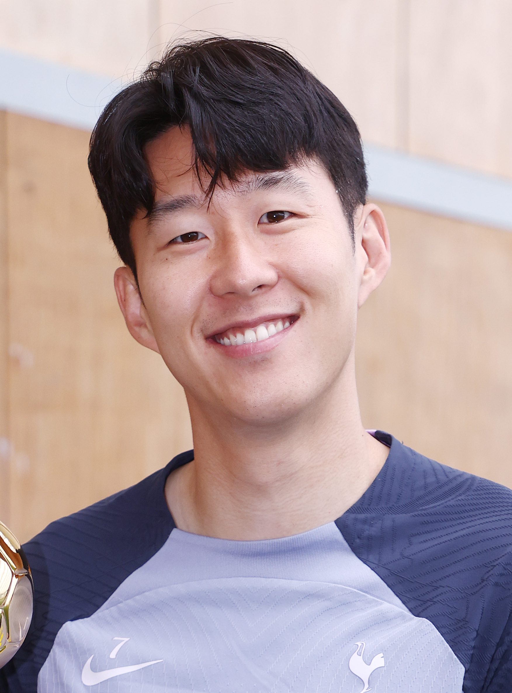
El técnico Hong Myung-bo consolida un 3-4-2-1 que muta a 3-4-3 en transición ofensiva y a 5-4-1 cuando necesita mayor estabilidad. Kim Min-jae (Bayern Munich) lidera la zaga de tres centrales, mientras los carrileros Seol Young-woo y Lee Tae-seok asumen la proyección por banda. Hwang In-beom y Jens Castrop —primer naturalizado coreano en un Mundial— gestionan el doble pivote, y Lee Kang-in y Lee Jae-sung operan como mediapuntas detrás de Son Heung-min, con licencia para venir desde la izquierda al centro. Objetivo: clasificar a octavos fuera de Asia por primera vez desde 2010.
↗ Nota en AlterFutbol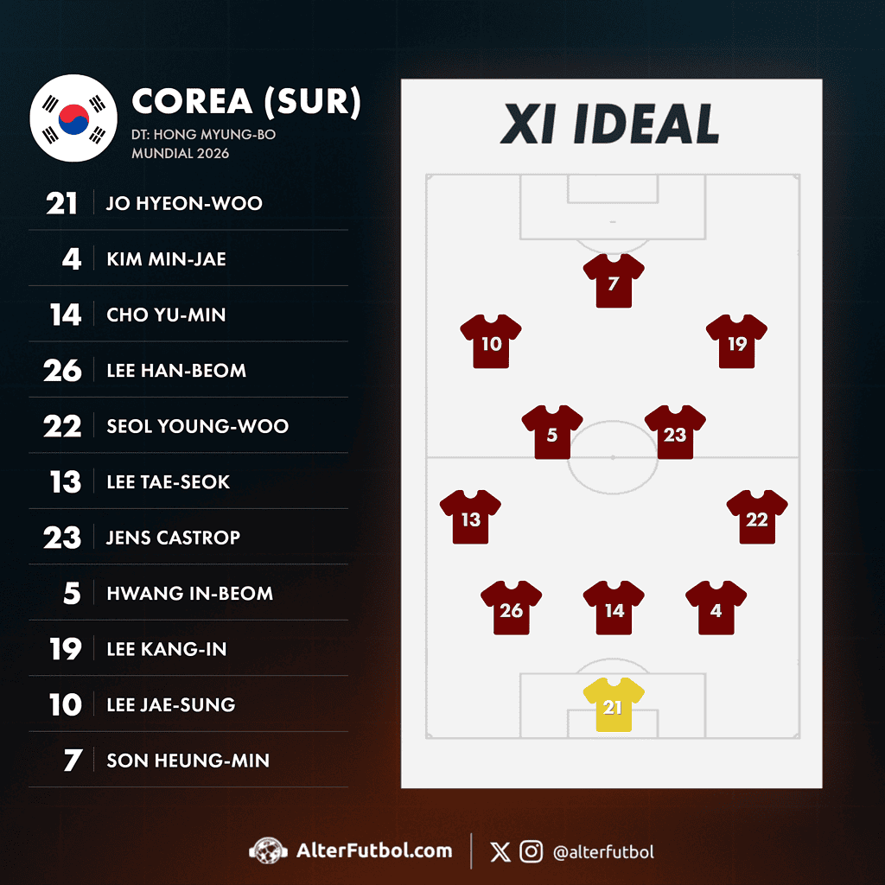
| Pos | Jugador | Edad | Club | País | ELO | Titular |
|---|---|---|---|---|---|---|
| GK | Jo Hyeon-woo | 34 | Ulsan HD | Corea | N/D | Sí |
| GK | Kim Seung-gyu | 35 | FC Tokyo | Japón | N/D | No |
| GK | Song Bum-keun | 28 | Jeonbuk Hyundai Motors | Corea | N/D | No |
| DEF | Kim Min-jae | 29 | Bayern Munich | Alemania | 2131 | Sí |
| DEF | Cho Yu-min | 29 | Sharjah FC | EAU | 1236 | Sí |
| DEF | Lee Han-beom | 23 | FC Midtjylland | Dinamarca | 1587 | Sí |
| DEF | Seol Young-woo | 27 | FK Crvena Zvezda | Serbia | 1604 | Sí |
| DEF | Lee Tae-seok | 23 | FK Austria Wien | Austria | N/D | Sí |
| DEF | Park Jin-seob | 30 | Zhejiang FC | China | N/D | No |
| DEF | Kim Moon-hwan | 30 | Daejeon Hana Citizen | Corea | N/D | No |
| DEF | Kim Tae-hyeon | 25 | Kashima Antlers | Japón | 1410 | No |
| DEF | Lee Ki-hyuk | 25 | Gangwon FC | Corea | N/D | No |
| MED | Hwang In-beom | 29 | Feyenoord | Países Bajos | 1542 | Sí |
| MED | Jens Castrop | 22 | Borussia Monchengladbach | Alemania | 1509 | Sí |
| MED | Lee Jae-sung | 33 | FSV Mainz 05 | Alemania | 1568 | Sí |
| MED | Lee Kang-in | 25 | Paris Saint-Germain | Francia | 2038 | Sí |
| MED | Kim Jin-gyu | 29 | Jeonbuk Hyundai Motors | Corea | N/D | No |
| MED | Paik Seung-ho | 29 | Birmingham City | Inglaterra | N/D | No |
| MED | Bae Jun-ho | 22 | Stoke City | Inglaterra | N/D | No |
| MED | Lee Dong-gyeong | 28 | Ulsan HD | Corea | N/D | No |
| DEL | Son Heung-min ★(C) | 33 | LAFC | EE.UU. | 1392 | Sí |
| DEL | Hwang Hee-chan | 30 | Wolverhampton | Inglaterra | 1456 | No |
| DEL | Oh Hyeon-gyu | 25 | Beşiktaş JK | Turquía | 1407 | No |
| DEL | Cho Gue-sung | 28 | Midtjylland FC | Dinamarca | 1587 | No |
| DEL | Yang Hyun-jun | 23 | Celtic FC | Escocia | 1595 | No |
| DEL | Eom Ji-sung | 24 | Swansea City | Gales | N/D | No |
México Sudáfrica Chequia Bosnia · Qatar · Suiza| # | Equipo | PJ | PG | PE | PP | GF | GC | DG | PTS |
|---|---|---|---|---|---|---|---|---|---|
| 1 | Canadá | 0 | 0 | 0 | 0 | 0 | 0 | 0 | 0 |
| 2 | Bosnia y Herz. |
0 | 0 | 0 | 0 | 0 | 0 | 0 | 0 |
| 3 | Qatar |
0 | 0 | 0 | 0 | 0 | 0 | 0 | 0 |
| 4 | Suiza |
0 | 0 | 0 | 0 | 0 | 0 | 0 | 0 |
Sin sorteo — novedad respecto a Qatar 2022.
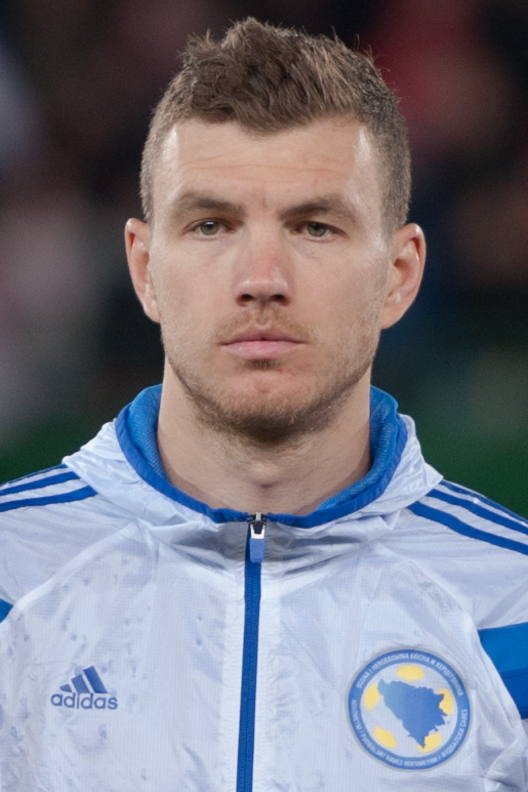
Barbarez consolidó un 4-4-2 de bloque bajo donde el pragmatismo es dogma: salida rápida por las bandas o pelotazo directo hacia Edin Džeko (40 años, capitán) como referencia aérea. Muharemović y Katić —ambos superan 1,90 m— hacen del juego aéreo y la pelota parada el arma ofensiva principal. Demirović (Stuttgart) acompaña a Džeko con mayor movilidad. El joven Kerim Alajbegović (18 años, Salzburg) es la promesa del grupo. Clasificaron eliminando a Italia en penales en Zenica (1-1, 4-1 en tanda).
↗ Nota en AlterFutbol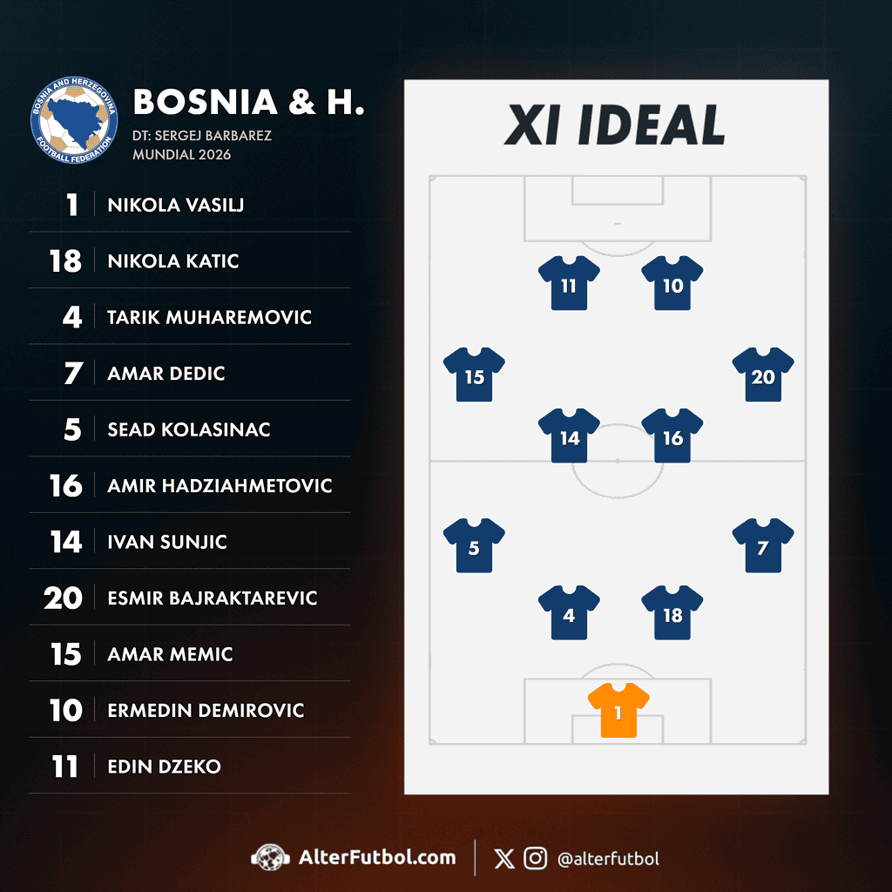
| Pos | Jugador | Edad | Club | País | ELO | Titular |
|---|---|---|---|---|---|---|
| GK | Nikola Vasilj | 30 | FC St. Pauli | Alemania | 1321 | Sí |
| GK | Martin Zlomislić | 27 | Rijeka | Croacia | 1398 | No |
| GK | Osman Hadžikić | 30 | Slaven Belupo | Croacia | 1221 | No |
| DEF | Sead Kolašinac | 32 | Atalanta | Italia | 1676 | Sí |
| DEF | Dennis Hadžikadunić | 27 | Sampdoria | Italia | N/D | No |
| DEF | Amar Dedić | 23 | Benfica | Portugal | 1729 | Sí |
| DEF | Nikola Katić | 29 | Schalke 04 | Alemania | N/D | Sí |
| DEF | Tarik Muharemović | 23 | Sassuolo | Italia | 1458 | Sí |
| DEF | Nihad Mujakić | 28 | Gaziantep | Turquía | 1187 | No |
| DEF | Stjepan Radeljić | 28 | Rijeka | Croacia | 1398 | No |
| DEF | Nidal Čelik | 19 | Lens | Francia | 1610 | No |
| MED | Amir Hadžiahmetović | 29 | Hull City | Inglaterra | N/D | Sí |
| MED | Benjamin Tahirović | 23 | Brøndby | Dinamarca | 1377 | No |
| MED | Armin Gigović | 24 | Young Boys | Suiza | 1381 | No |
| MED | Dženis Burnić | 28 | Karlsruher SC | Alemania | N/D | No |
| MED | Ivan Bašić | 24 | Astana | Kazajistán | 1339 | No |
| MED | Esmir Bajraktarević | 21 | PSV Eindhoven | Países Bajos | 1726 | Sí |
| MED | Amar Memić | 25 | Viktoria Plzeň | Chequia | 1556 | Sí |
| MED | Ivan Šunjić | 29 | Pafos | Chipre | 1471 | Sí |
| MED | Kerim Alajbegović | 18 | RB Salzburg | Austria | 1410 | No |
| MED | Ermin Mahmić | 21 | Slovan Liberec | Chequia | 1318 | No |
| DEL | Edin Džeko ★(C) | 40 | Schalke 04 | Alemania | N/D | Sí |
| DEL | Ermedin Demirović | 28 | VfB Stuttgart | Alemania | 1647 | Sí |
| DEL | Samed Baždar | 22 | Jagiellonia | Polonia | 1389 | No |
| DEL | Haris Tabaković | 31 | B. Mönchengladbach | Alemania | 1509 | No |
| DEL | Jovo Lukić | 27 | Univ. Cluj | Rumania | 1227 | No |
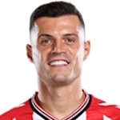
Yakin organiza un 4-3-3 que combina presión alta y verticalidad como plan A, con capacidad de replegarse a bloque medio y contragolpe frente a rivales superiores. Granit Xhaka (Sunderland, capitán) ordena desde el eje; Freuler aporta equilibrio defensivo y Rieder el perfil más ofensivo del mediocampo. Manuel Akanji (Inter) es la pieza clave de la zaga y Breel Embolo el nueve indiscutido en punta. Manzambi (20 años, Friburgo) aporta creatividad desde el banco. El gran objetivo colectivo: superar los octavos de final, algo que Suiza no consigue desde 1938.
↗ Nota en AlterFutbol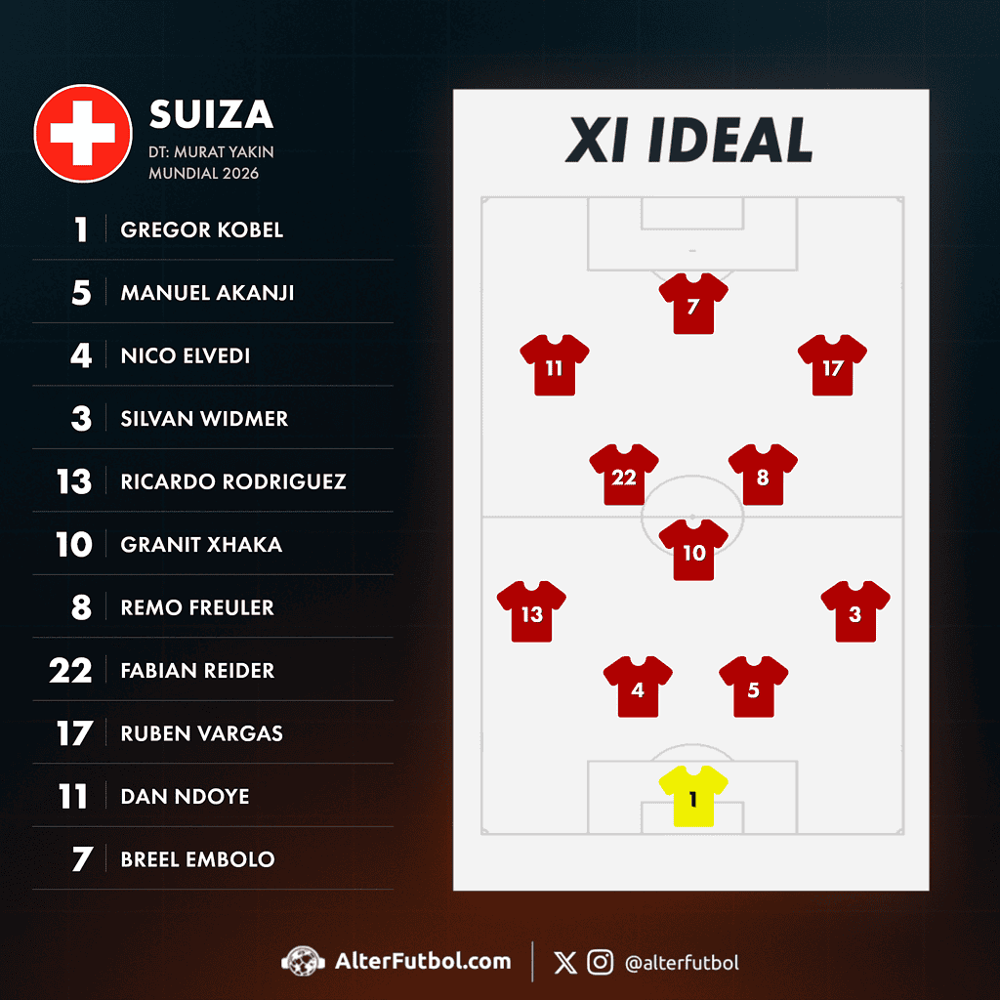
| Pos | Jugador | Edad | Club | País | ELO | Titular |
|---|---|---|---|---|---|---|
| GK | Gregor Kobel | 28 | Borussia Dortmund | Alemania | 1808 | Sí |
| GK | Yvon Mvogo | 32 | Lorient | Francia | 1407 | No |
| GK | Marvin Keller | 23 | Young Boys | Suiza | 1381 | No |
| DEF | Manuel Akanji | 30 | Inter de Milán | Italia | 1864 | Sí |
| DEF | Nico Elvedi | 29 | B. Mönchengladbach | Alemania | 1509 | Sí |
| DEF | Ricardo Rodriguez | 33 | Real Betis | España | 1664 | Sí |
| DEF | Silvan Widmer | 33 | Mainz 05 | Alemania | 1568 | Sí |
| DEF | Miro Muheim | 28 | HSV (Hamburgo) | Alemania | 1434 | No |
| DEF | Aurèle Amenda | 22 | Eintracht Frankfurt | Alemania | 1545 | No |
| DEF | Luca Jaquez | 22 | VfB Stuttgart | Alemania | 1647 | No |
| DEF | Eray Cömert | 28 | Valencia | España | 1562 | No |
| MED | Granit Xhaka ★(C) | 33 | Sunderland | Inglaterra | 1516 | Sí |
| MED | Remo Freuler | 34 | Bologna | Italia | 1631 | Sí |
| MED | Denis Zakaria | 29 | Mónaco | Francia | 1626 | No |
| MED | Ardon Jashari | 23 | AC Milan | Italia | 1688 | No |
| MED | Djibril Sow | 29 | Sevilla | España | 1490 | No |
| MED | Michel Aebischer | 29 | Pisa | Italia | 1159 | No |
| MED | Fabian Rieder | 24 | Augsburg | Alemania | 1515 | Sí |
| MED | Johan Manzambi | 20 | SC Friburgo | Alemania | 1636 | No |
| DEL | Breel Embolo | 29 | Rennes | Francia | 1534 | Sí |
| DEL | Dan Ndoye | 25 | Nottingham Forest | Inglaterra | 1658 | Sí |
| DEL | Ruben Vargas | 27 | Sevilla | España | 1490 | Sí |
| DEL | Noah Okafor | 26 | Leeds United | Inglaterra | 1549 | No |
| DEL | Christian Fassnacht | 32 | Young Boys | Suiza | 1381 | No |
| DEL | Cedric Itten | 29 | Fortuna Düsseldorf | Alemania | N/D | No |
| DEL | Zeki Amdouni | 25 | Burnley | Inglaterra | 1381 | No |
Qatar Brasil ·
Brasil ·  Marruecos ·
Marruecos ·  Haití ·
Haití ·  Escocia
Escocia| # | Equipo | PJ | PG | PE | PP | GF | GC | DG | PTS |
|---|---|---|---|---|---|---|---|---|---|
| 1 | Brasil |
0 | 0 | 0 | 0 | 0 | 0 | 0 | 0 |
| 2 | Marruecos |
0 | 0 | 0 | 0 | 0 | 0 | 0 | 0 |
| 3 | Haití |
0 | 0 | 0 | 0 | 0 | 0 | 0 | 0 |
| 4 | Escocia |
0 | 0 | 0 | 0 | 0 | 0 | 0 | 0 |
Sin sorteo — novedad respecto a Qatar 2022.
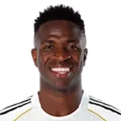
Ancelotti implementa un esquema que oscila entre el 4-2-4 y el 4-2-3-1, con un falso nueve móvil —generalmente Matheus Cunha o Igor Thiago— y Vinicius como atacante de profundidad por la izquierda. Casemiro y Bruno Guimarães forman el doble pivote; Raphinha opera por la derecha. La inclusión de Neymar genera incertidumbre táctica: su perfil cadencioso y asociativo choca con la verticalidad del esquema base de Ancelotti, que lo contempla inicialmente desde el banco. Brasil clasificó quinto en CONMEBOL, su peor registro histórico en eliminatorias.
↗ Nota en AlterFutbol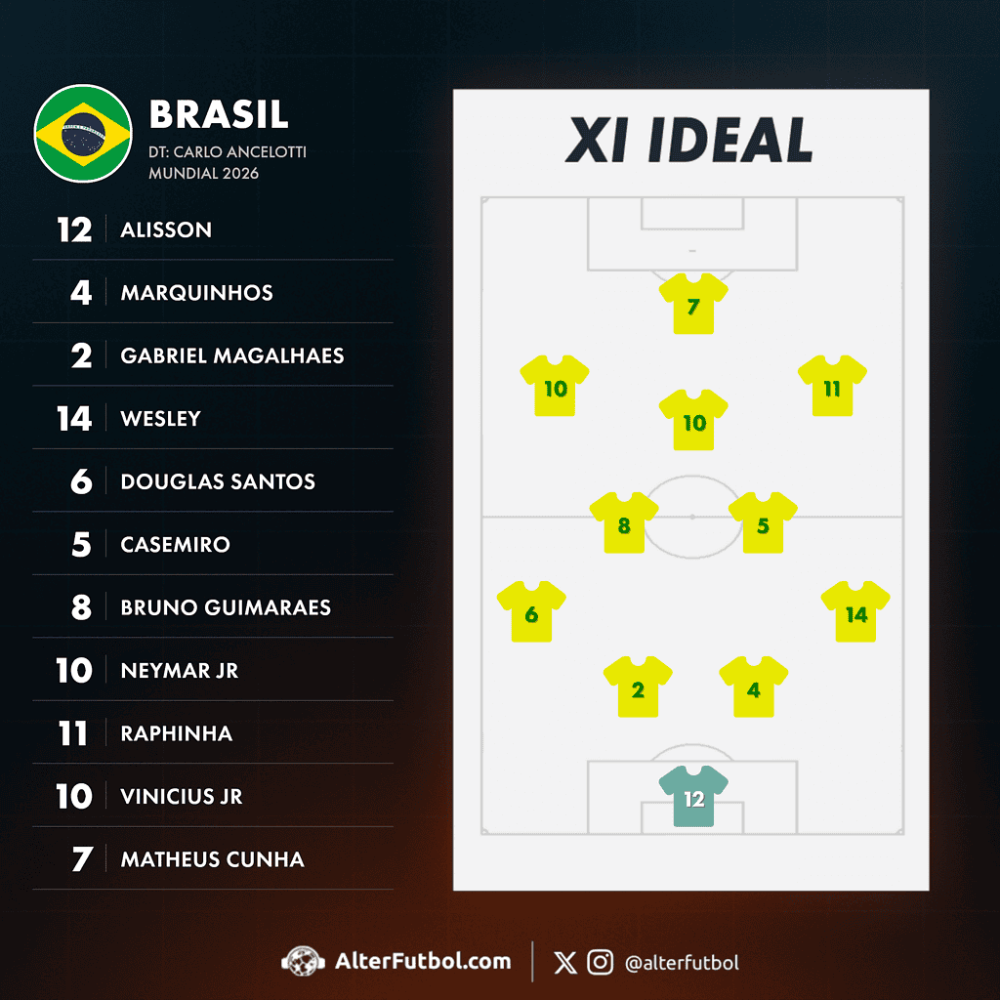
| Pos | Jugador | Edad | Club | País | ELO | Titular |
|---|---|---|---|---|---|---|
| GK | Alisson | 33 | Liverpool | Inglaterra | 1860 | Sí |
| GK | Ederson | 32 | Fenerbahçe | Turquía | 1616 | No |
| GK | Weverton | 38 | Grêmio | Brasil | 1298 | No |
| DEF | Marquinhos (C) | 32 | PSG | Francia | 2038 | Sí |
| DEF | Gabriel Magalhães | 28 | Arsenal | Inglaterra | 2106 | Sí |
| DEF | Bremer | 29 | Juventus | Italia | 1740 | No |
| DEF | Ibañez | 27 | Al-Ahli | Arabia S. | 1561 | No |
| DEF | Léo Pereira | 30 | Flamengo | Brasil | 1530 | No |
| DEF | Danilo | 34 | Flamengo | Brasil | 1530 | No |
| DEF | Wesley | 22 | Roma | Italia | 1717 | Sí |
| DEF | Alex Sandro | 35 | Flamengo | Brasil | 1530 | No |
| DEF | Douglas Santos | 32 | Zenit | Rusia | 1636 | Sí |
| MED | Casemiro | 34 | Manchester United | Inglaterra | 1784 | Sí |
| MED | Bruno Guimarães | 28 | Newcastle | Inglaterra | 1731 | Sí |
| MED | Danilo | 25 | Botafogo | Brasil | 1426 | No |
| MED | Fabinho | 34 | Al-Ittihad | Arabia S. | 1057 | No |
| MED | Lucas Paquetá | 28 | Flamengo | Brasil | 1530 | No |
| DEL | Neymar | 34 | Santos | Brasil | 1255 | Sí |
| DEL | Vinicius Júnior ★ | 25 | Real Madrid | España | 2012 | Sí |
| DEL | Raphinha | 29 | Barcelona | España | 2019 | Sí |
| DEL | Matheus Cunha | 26 | Manchester United | Inglaterra | 1784 | Sí |
| DEL | Gabriel Martinelli | 24 | Arsenal | Inglaterra | 2106 | No |
| DEL | Luiz Henrique | 25 | Zenit | Rusia | 1636 | No |
| DEL | Igor Thiago | 24 | Brentford | Inglaterra | 1647 | No |
| DEL | Endrick | 19 | Lyon | Francia | 1636 | No |
| DEL | Rayan | 19 | Bournemouth | Inglaterra | 1684 | No |
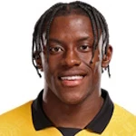
Migné organiza un 4-2-3-1 que puede mutar a 4-3-3 según el rival, priorizando el esquema colectivo sobre las individualidades. Jean-Ricner Bellegarde (Wolverhampton) es el eje del mediocampo; Wilson Isidor (Sunderland) actúa como delantero estrella y Duckens Nazon —máximo goleador histórico con 44 tantos— aporta experiencia en punta. El plantel es una selección del exilio: Migné identificó y convenció a jugadores de la diáspora dispersos por Europa y Estados Unidos sin pisar nunca el país. Su única participación mundialista anterior fue Alemania 1974.
↗ Nota en AlterFutbol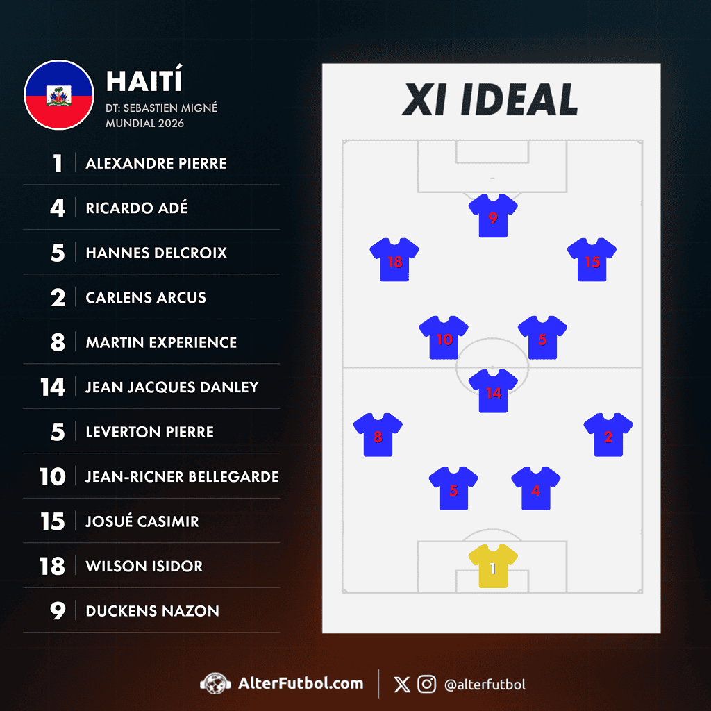
| Pos | Jugador | Edad | Club | País | ELO | Titular |
|---|---|---|---|---|---|---|
| GK | Alexandre Pierre | 25 | FC Sochaux | Francia | N/D | Sí |
| GK | Johny Placide | 38 | SC Bastia | Francia | 1065 | No |
| GK | Josué Duverger | 26 | Cosmos Koblenz | Alemania | N/D | No |
| DEF | Ricardo Adé | 35 | LDU Quito | Ecuador | 1363 | Sí |
| DEF | Carlens Arcus | 29 | Angers SCO | Francia | 1300 | Sí |
| DEF | Wilguens Paugain | 24 | SV Zulte Waregem | Bélgica | N/D | No |
| DEF | Martin Expérience | 27 | AS Nancy Lorraine | Francia | N/D | Sí |
| DEF | Duke Lacroix | 32 | Colorado Springs | EE.UU. | N/D | No |
| DEF | Hannes Delcroix | 27 | FC Lugano | Suiza | 1408 | Sí |
| DEF | Jean-Kevin Duverne | 28 | KAA Gent | Bélgica | N/D | No |
| DEF | Keeto Thermoncy | 20 | Young Boys | Suiza | 1381 | No |
| MED | Jean-Ricner Bellegarde ★ | 27 | Wolverhampton | Inglaterra | 1456 | Sí |
| MED | Jean-Jacques Danley | 25 | Philadelphia Union | EE.UU. | 1247 | Sí |
| MED | Dominique Simon | 23 | FC Tatran Presov | Eslovaquia | N/D | No |
| MED | Leverton Pierre | 28 | FC Vizela | Portugal | N/D | Sí |
| MED | Woodensky Pierre | 21 | Violette AC | Haití | N/D | No |
| MED | Carl Sainté | 23 | El Paso Locomotive | EE.UU. | N/D | No |
| MED | Wilson Isidor | 25 | Sunderland | Inglaterra | 1516 | Sí |
| MED | Derrick Etienne | 29 | Toronto FC | EE.UU. | 1103 | No |
| MED | Don Deedson Louicius | 25 | FC Dallas | EE.UU. | 1181 | No |
| MED | Ruben Providence | 24 | Almere City FC | Países Bajos | N/D | No |
| MED | Josué Casimir | 24 | AJ Auxerre | Francia | 1363 | Sí |
| DEL | Duckens Nazon | 32 | Esteghlal FC | Irán | 1303 | Sí |
| DEL | Frantzdy Pierrot | 31 | Çaykur Rizespor | Turquía | 1213 | No |
| DEL | Yassin Fortuné | 27 | FC Vizela | Portugal | N/D | No |
| DEL | Lenny Joseph | 25 | Ferencváros TC | Hungría | 1581 | No |
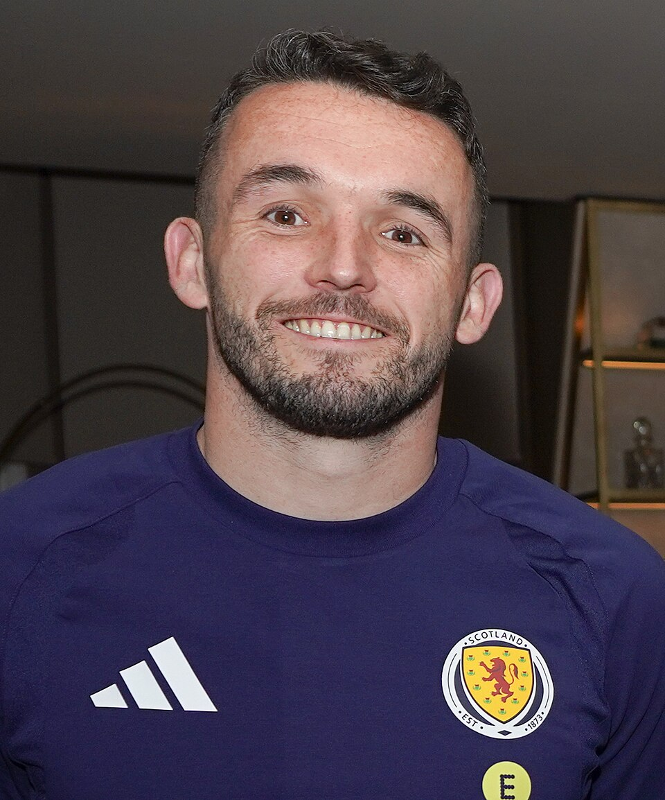
Steve Clarke dispone un 4-2-3-1 con variante a 3-4-2-1 según el partido. El sistema no busca la posesión ni el dominio territorial sino bloques compactos con líneas cercanas y transiciones rápidas. Andy Robertson (Liverpool, capitán) articula casi todo el ataque desde el carril izquierdo; Scott McTominay (Napoli) opera en posiciones intermedias y ataca el área; John McGinn (Aston Villa) actúa entre líneas o por la derecha. La pelota parada y los centros laterales son las armas ofensivas principales. Escocia llega a un Mundial por primera vez en 28 años tras una clasificación directa sin repechaje.
↗ Nota en AlterFutbol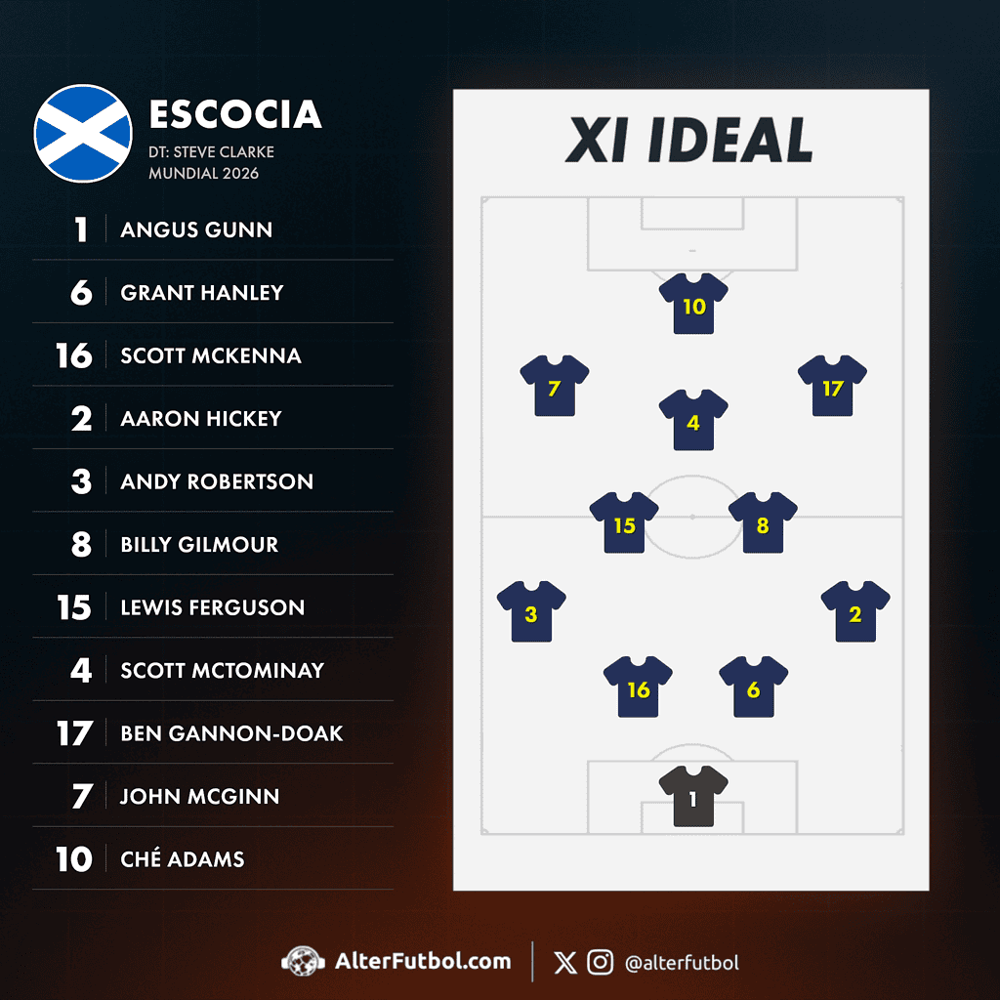
| Pos | Jugador | Edad | Club | País | ELO | Titular |
|---|---|---|---|---|---|---|
| GK | Craig Gordon | 43 | Heart of Midlothian | Escocia | 1405 | No |
| GK | Angus Gunn | 30 | Nottingham Forest | Inglaterra | 1658 | Sí |
| GK | Liam Kelly | 29 | Rangers | Escocia | 1050 | No |
| DEF | Andy Robertson | 32 | Liverpool | Inglaterra | 1860 | Sí |
| DEF | Kieran Tierney | 28 | Celtic | Escocia | 1595 | No |
| DEF | Aaron Hickey | 23 | Brentford | Inglaterra | 1647 | Sí |
| DEF | Nathan Patterson | 24 | Everton | Inglaterra | 1611 | No |
| DEF | Anthony Ralston | 27 | Celtic | Escocia | 1595 | No |
| DEF | Grant Hanley | 34 | Hibernian | Escocia | 1310 | Sí |
| DEF | John Souttar | 29 | Rangers | Escocia | 1050 | No |
| DEF | Scott McKenna | 29 | Dinamo Zagreb | Croacia | 1584 | Sí |
| DEF | Jack Hendry | 31 | Al-Ettifaq | Arabia S. | 1156 | No |
| DEF | Dominic Hyam | 30 | Wrexham | Gales | N/D | No |
| MED | Scott McTominay | 29 | Napoli | Italia | 1711 | Sí |
| MED | John McGinn ★(C) | 31 | Aston Villa | Inglaterra | 1861 | Sí |
| MED | Billy Gilmour | 24 | Napoli | Italia | 1711 | Sí |
| MED | Kenny McLean | 34 | Norwich City | Inglaterra | N/D | No |
| MED | Lewis Ferguson | 26 | Bologna | Italia | 1631 | Sí |
| MED | Ryan Christie | 31 | Bournemouth | Inglaterra | 1684 | No |
| MED | Ben Gannon-Doak | 20 | Bournemouth | Inglaterra | 1684 | Sí |
| MED | Findlay Curtis | 19 | Kilmarnock FC | Escocia | N/D | No |
| DEL | Ché Adams | 29 | Torino | Italia | 1484 | Sí |
| DEL | Lyndon Dykes | 30 | Charlton Athletic | Inglaterra | N/D | No |
| DEL | Lawrence Shankland | 30 | Heart of Midlothian | Escocia | 1405 | No |
| DEL | George Hirst | 27 | Ipswich Town | Inglaterra | N/D | No |
| DEL | Ross Stewart | 29 | Southampton | Inglaterra | N/D | No |
Marruecos EE.UU. · Paraguay · Australia · Turquía| # | Equipo | PJ | PG | PE | PP | GF | GC | DG | PTS |
|---|---|---|---|---|---|---|---|---|---|
| 1 | Estados Unidos LOCAL |
0 | 0 | 0 | 0 | 0 | 0 | 0 | 0 |
| 2 | Paraguay |
0 | 0 | 0 | 0 | 0 | 0 | 0 | 0 |
| 3 | Australia |
0 | 0 | 0 | 0 | 0 | 0 | 0 | 0 |
| 4 | Turquía |
0 | 0 | 0 | 0 | 0 | 0 | 0 | 0 |
Sin sorteo — novedad respecto a Qatar 2022.
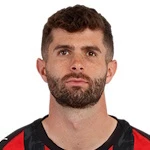
Pochettino estructura un 4-2-3-1 de presión alta que puede variar al 4-3-3 con el balón. Tyler Adams (Bournemouth) y Weston McKennie (Juventus) conforman el doble pivote; Christian Pulisic —capitán y referencia ofensiva— opera como mediapunta detrás de Folarin Balogun (Mónaco). Malik Tillman (Leverkusen) aporta dinamismo entre líneas y Tim Weah (Marsella) genera por la banda derecha. Sergiño Dest regresa como lateral derecho titular. EE.UU. afronta el torneo como anfitrión por primera vez desde 1994 y busca superar los octavos de final que alcanzó en Qatar 2022, ahora con una generación más madura.
↗ Nota en AlterFutbol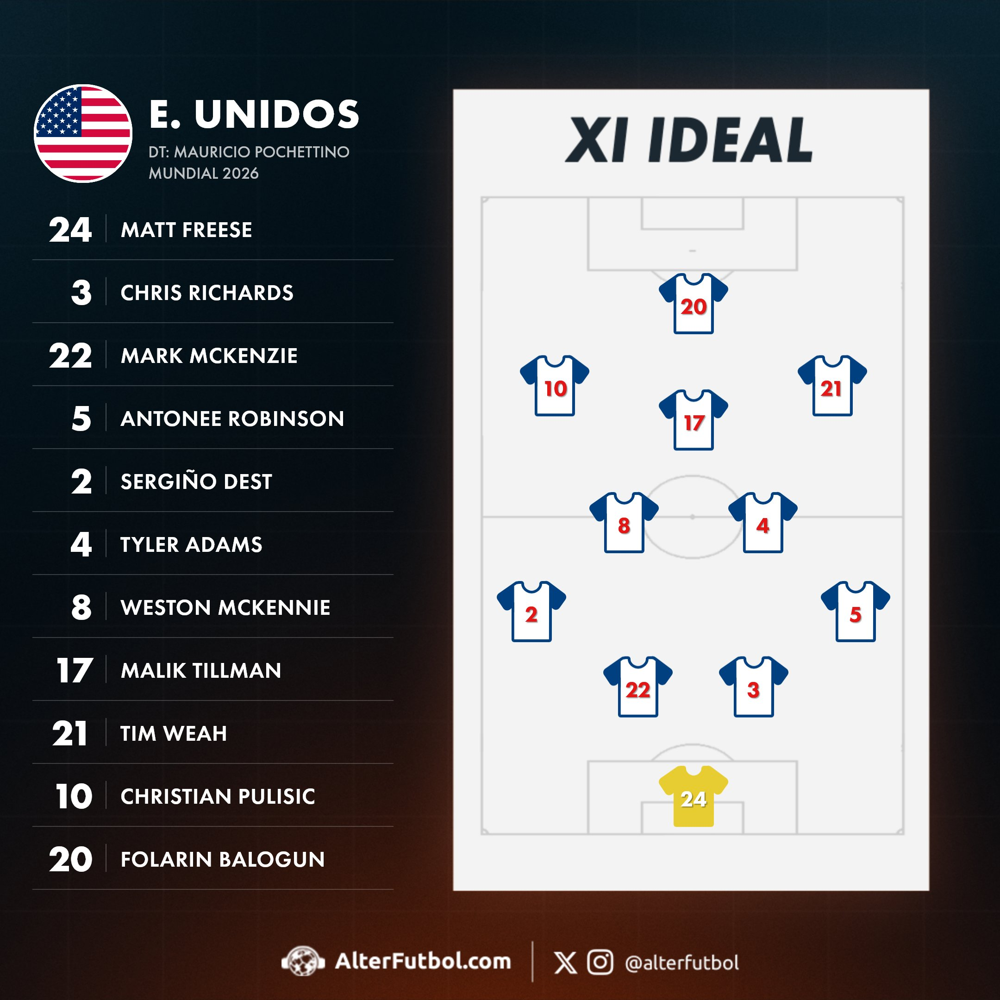
| Pos | Jugador | Edad | Club | País | ELO | Titular |
|---|---|---|---|---|---|---|
| GK | Matt Freese | 27 | New York City FC | EE.UU. | N/D | Sí |
| GK | Matt Turner | 31 | New England Revolution | EE.UU. | N/D | No |
| GK | Chris Brady | 22 | Chicago Fire | EE.UU. | N/D | No |
| DEF | Sergiño Dest | 25 | PSV Eindhoven | Países Bajos | 1726 | Sí |
| DEF | Chris Richards | 26 | Crystal Palace | Inglaterra | 1630 | Sí |
| DEF | Tim Ream | 35 | Charlotte FC | EE.UU. | N/D | Sí |
| DEF | Antonee Robinson | 28 | Fulham | Inglaterra | N/D | Sí |
| DEF | Alex Freeman | 21 | Villarreal | España | 1620 | No |
| DEF | Auston Trusty | 27 | Celtic | Escocia | 1595 | No |
| DEF | Joe Scally | 23 | B. Mönchengladbach | Alemania | 1509 | No |
| DEF | Mark McKenzie | 27 | Toulouse FC | Francia | N/D | No |
| DEF | Miles Robinson | 29 | FC Cincinnati | EE.UU. | N/D | No |
| DEF | Max Arfsten | 25 | Columbus Crew | EE.UU. | N/D | No |
| MED | Malik Tillman | 23 | Bayer Leverkusen | Alemania | 1784 | Sí |
| MED | Weston McKennie | 27 | Juventus | Italia | 1740 | Sí |
| MED | Tyler Adams | 27 | Bournemouth | Inglaterra | 1684 | Sí |
| MED | Tim Weah | 26 | Olympique de Marseille | Francia | N/D | Sí |
| MED | Sebastian Berhalter | 25 | Vancouver Whitecaps | Canadá | N/D | No |
| MED | Cristian Roldán | 30 | Seattle Sounders | EE.UU. | N/D | No |
| DEL | Christian Pulisic ★(C) | 27 | AC Milan | Italia | 1688 | Sí |
| DEL | Folarin Balogun | 24 | AS Monaco | Francia | 1626 | Sí |
| DEL | Ricardo Pepi | 23 | PSV Eindhoven | Países Bajos | 1726 | No |
| DEL | Brenden Aaronson | 25 | Leeds United | Inglaterra | 1549 | No |
| DEL | Giovanny Reyna | 23 | B. Mönchengladbach | Alemania | 1509 | No |
| DEL | Alejandro Zendejas | 28 | Club América | México | N/D | No |
| DEL | Haji Wright | 28 | Coventry City | Inglaterra | N/D | No |
Paraguay Australia Turquía Alemania · Curazao · Costa de Marfil · Ecuador| # | Equipo | PJ | PG | PE | PP | GF | GC | DG | PTS |
|---|---|---|---|---|---|---|---|---|---|
| 1 | Alemania |
0 | 0 | 0 | 0 | 0 | 0 | 0 | 0 |
| 2 | Costa de Marfil |
0 | 0 | 0 | 0 | 0 | 0 | 0 | 0 |
| 3 | Ecuador |
0 | 0 | 0 | 0 | 0 | 0 | 0 | 0 |
| 4 | Curazao |
0 | 0 | 0 | 0 | 0 | 0 | 0 | 0 |
Sin sorteo — novedad respecto a Qatar 2022.
Nagelsmann establece un 4-2-3-1 vertical y agresivo que combina construcción asociada desde el fondo con presión coordinada. Kimmich opera como lateral derecho indiscutido proyectándose al mediocampo; Pavlović ejerce de pivote de contención tras su crecimiento en el Bayern, secundado probablemente por Goretzka. Wirtz y Musiala son los volantes ofensivos intercambiables, con rotación constante entre líneas; Woltemade actúa como delantero titular. La vulnerabilidad en transición defensiva y la ausencia de un líder natural tras el retiro de Hummels son las dudas. Alemania llega urgida de borrar dos mundiales seguidos terminados en fase de grupos.
↗ Nota en AlterFutbol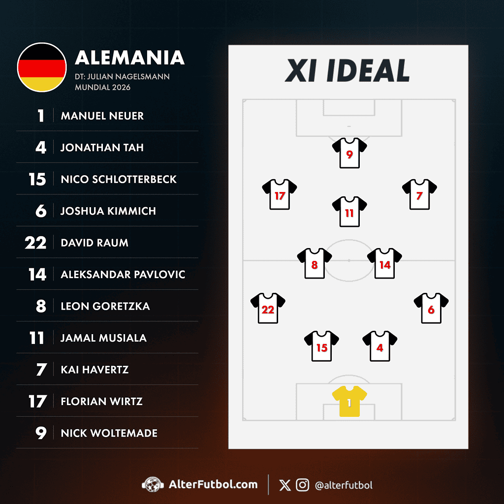
| Pos | Jugador | Edad | Club | País | ELO | Titular |
|---|---|---|---|---|---|---|
| GK | Manuel Neuer | 40 | Bayern Munich | Alemania | 2131 | Sí |
| GK | Oliver Baumann | 35 | Hoffenheim | Alemania | 1587 | No |
| GK | Alexander Nübel | 29 | Stuttgart | Alemania | 1647 | No |
| DEF | Antonio Rüdiger | 32 | Real Madrid | España | 2012 | No |
| DEF | Jonathan Tah | 30 | Bayern Munich | Alemania | 2131 | Sí |
| DEF | Nico Schlotterbeck | 26 | Dortmund | Alemania | 1808 | Sí |
| DEF | Waldemar Anton | 29 | Dortmund | Alemania | 1808 | No |
| DEF | David Raum | 28 | Leipzig | Alemania | 1686 | Sí |
| DEF | Joshua Kimmich (C) | 31 | Bayern Munich | Alemania | 2131 | Sí |
| DEF | Malick Thiaw | 24 | Newcastle United | Inglaterra | 1731 | No |
| DEF | Brown | 24 | Eintracht Frankfurt | Alemania | 1545 | No |
| MED | Leon Goretzka | 31 | Bayern Munich | Alemania | 2131 | Sí |
| MED | Aleksandar Pavlović | 21 | Bayern Munich | Alemania | 2131 | Sí |
| MED | Angelo Stiller | 25 | Stuttgart | Alemania | 1647 | No |
| MED | Pascal Groß | 34 | Brighton & Hove Albion | Inglaterra | 1680 | No |
| MED | Felix Nmecha | 25 | Dortmund | Alemania | 1808 | No |
| MED | Florian Wirtz ★ | 23 | Liverpool | Inglaterra | 1860 | Sí |
| MED | Jamal Musiala | 23 | Bayern Munich | Alemania | 2131 | Sí |
| MED | Leroy Sané | 30 | Galatasaray SK | Turquía | 1641 | No |
| MED | Tom Leweling | 26 | Stuttgart | Alemania | 1647 | No |
| MED | Karl | 23 | Bayern Munich | Alemania | 2131 | No |
| MED | Nadiem Amiri | 29 | Mainz 05 | Alemania | 1568 | No |
| DEL | Kai Havertz | 27 | Arsenal | Inglaterra | 2106 | Sí |
| DEL | Niclas Woltemade | 23 | Newcastle United | Inglaterra | 1731 | Sí |
| DEL | Deniz Undav | 29 | Stuttgart | Alemania | 1647 | No |
| DEL | Maximilian Beier | 24 | Dortmund | Alemania | 1808 | No |
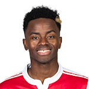
Emerse Faé construye la identidad de Costa de Marfil sobre tres volantes de marca que dominan la zona media: Franck Kessié (Al-Ahli), Ibrahim Sangaré (Nottingham Forest) y Christ Inao Oulaï (Trabzonspor) dan músculo al esquema en un 4-3-3 de imposición física. Por las bandas, Amad Diallo (Manchester United) es el gran diferencial y Yan Diomandé (RB Leipzig, 19 años) suma desborde con 13 goles en liga. La carencia de un nueve referente de área es la debilidad crónica del equipo. Regresan a un Mundial por primera vez desde Brasil 2014, tras ganar la Copa Africana 2023.
↗ Nota en AlterFutbol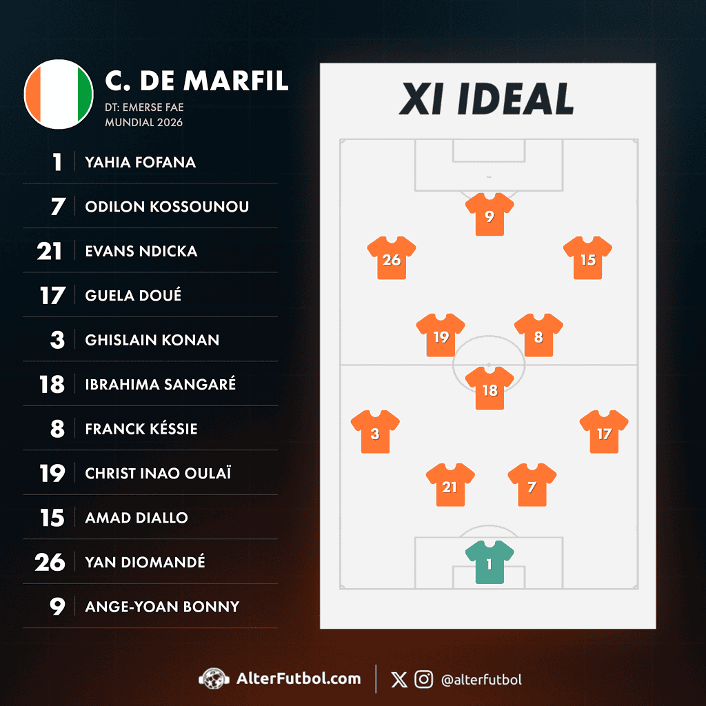
| Pos | Jugador | Edad | Club | País | ELO | Titular |
|---|---|---|---|---|---|---|
| GK | Yahia Fofana | 25 | Çaykur Rizespor | Turquía | 1213 | Sí |
| GK | Alban Lafont | 27 | Panathinaikos FC | Grecia | 1509 | No |
| GK | Mohamed Koné | 24 | RSC Charleroi | Bélgica | 1336 | No |
| DEF | Odilon Kossounou | 25 | Atalanta BC | Italia | 1676 | Sí |
| DEF | Evan Ndicka | 26 | AS Roma | Italia | 1717 | Sí |
| DEF | Ghislain Konan | 30 | Gil Vicente | Portugal | 1282 | Sí |
| DEF | Wilfried Singo | 25 | Galatasaray SK | Turquía | 1641 | No |
| DEF | Emmanuel Agbadou | 28 | Beşiktaş JK | Turquía | 1407 | No |
| DEF | Guéla Doué | 23 | RC Strasbourg | Francia | 1532 | Sí |
| DEF | Ousmane Diomandé | 22 | Sporting CP | Portugal | 1804 | No |
| DEF | Clément Akpa | 24 | AJ Auxerre | Francia | 1363 | No |
| MED | Franck Kessié | 29 | Al-Ahli Saudi FC | Arabia S. | 1400 | Sí |
| MED | Jean-Michaël Seri | 34 | NK Maribor | Eslovenia | 1357 | No |
| MED | Ibrahim Sangaré | 28 | Nottingham Forest | Inglaterra | 1658 | Sí |
| MED | Seko Fofana | 31 | FC Porto | Portugal | 1712 | No |
| MED | Christ Inao Oulaï | 20 | Trabzonspor | Turquía | 1416 | Sí |
| MED | Parfait Guiagon | 25 | RSC Charleroi | Bélgica | 1336 | No |
| DEL | Nicolas Pépé | 30 | Villarreal CF | España | 1620 | No |
| DEL | Simon Adingra ★ | 24 | AS Monaco | Francia | 1626 | No |
| DEL | Evann Guessand | 24 | Crystal Palace | Inglaterra | 1630 | No |
| DEL | Amad Diallo | 23 | Manchester United | Inglaterra | 1784 | Sí |
| DEL | Bazoumana Touré | 20 | TSG Hoffenheim | Alemania | 1587 | No |
| DEL | Elye Wahi | 23 | OGC Nice | Francia | N/D | No |
| DEL | Yan Diomandé | 19 | RB Leipzig | Alemania | 1686 | Sí |
| DEL | Ange-Yoan Bonny | 22 | Inter de Milán | Italia | 1864 | Sí |
| DEL | Oumar Diakité | 22 | Cercle Brugge | Bélgica | N/D | No |
EcuadorDick Advocaat regresó —tras la recuperación de su hija— para dirigir su tercer Mundial a los 78 años. El esquema es un 4-3-3 de estilo holandés clásico: menos posesión que el Ajax de antaño pero la misma base estructural. Obispo (PSV Eindhoven) lidera la defensa; los hermanos Bacuna son el corazón del mediocampo, con Leandro como capitán y Juninho aportando la creatividad. Comenencia opera como pivot interior a pesar de llegar con dudas físicas. En ataque, Chong y Hanssen dan velocidad y desborde por las bandas con Locadia como referencia de área. Curazao es el país más pequeño en la historia mundialista —150.000 habitantes— y la clasificación es en sí misma el gran logro del ciclo; convidado de piedra en un grupo con Alemania, Costa de Marfil y Ecuador.
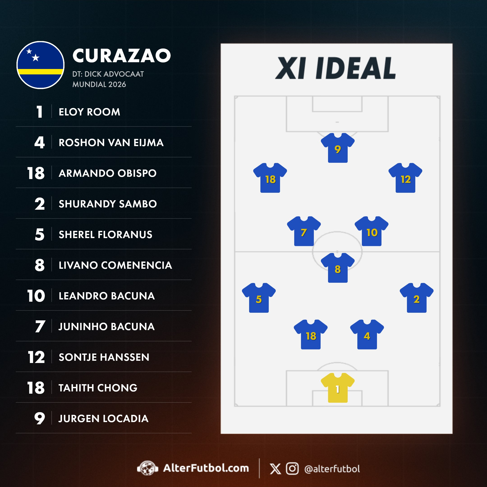
| Pos | Jugador | Edad | Club | País | ELO | Titular |
|---|---|---|---|---|---|---|
| GK | Eloy Room | 37 | Miami FC | EE.UU. | N/D | Sí |
| GK | Tyrick Bodak | 23 | SC Telstar | Países Bajos | N/D | No |
| GK | Trevor Doornbusch | 27 | VVV-Venlo | Países Bajos | N/D | No |
| DEF | Armando Obispo | 27 | PSV Eindhoven | Países Bajos | 1726 | Sí |
| DEF | Joshua Brenet | 32 | Kayserispor | Turquía | N/D | No |
| DEF | Riechedly Bazoer | 29 | Konyaspor | Turquía | N/D | No |
| DEF | Sherel Floranus | 27 | PEC Zwolle | Países Bajos | N/D | Sí |
| DEF | Shurandy Sambo | 23 | Sparta Rotterdam | Países Bajos | N/D | Sí |
| DEF | Deveron Fonville | 25 | NEC Nijmegen | Países Bajos | N/D | No |
| DEF | Roshon van Eijma | 26 | RKC Waalwijk | Países Bajos | N/D | Sí |
| DEF | Jurien Gaari | 32 | Abha Club | Arabia Saudita | N/D | No |
| MED | Leandro Bacuna ★(C) | 34 | Idgir FK | Azerbaiyán | N/D | Sí |
| MED | Juninho Bacuna | 28 | FC Volendam | Países Bajos | N/D | Sí |
| MED | Livano Comenencia | 22 | FC Zürich | Suiza | N/D | Sí |
| MED | Tahith Chong | 26 | Sheffield United | Inglaterra | N/D | Sí |
| MED | Ar'jany Martha | 22 | Rotherham United | Inglaterra | N/D | No |
| MED | Tyrese Noslin | 23 | SC Telstar | Países Bajos | N/D | No |
| MED | Kevin Felida | 26 | FC Den Bosch | Países Bajos | N/D | No |
| MED | Godfried Roemeratore | 26 | RKC Waalwijk | Países Bajos | N/D | No |
| DEL | Sontje Hansen | 23 | Middlesbrough FC | Inglaterra | N/D | Sí |
| DEL | Gervane Kastaneer | 29 | Terengganu FC | Malasia | N/D | No |
| DEL | Kenji Gorré | 31 | Maccabi Haifa | Israel | 1428 | No |
| DEL | Jürgen Locadia | 32 | Miami FC | EE.UU. | N/D | Sí |
| DEL | Jeremy Antonisse | 24 | AE Kifisia | Grecia | N/D | No |
| DEL | Jearl Margaritha | 27 | SK Beveren | Bélgica | N/D | No |
| DEL | Bradley Kuwas | 33 | FC Volendam | Países Bajos | N/D | No |
 Países Bajos ·
Países Bajos ·  Japón ·
Japón ·  Suecia ·
Suecia ·  Túnez
Túnez| # | Equipo | PJ | PG | PE | PP | GF | GC | DG | PTS |
|---|---|---|---|---|---|---|---|---|---|
| 1 | Países Bajos |
0 | 0 | 0 | 0 | 0 | 0 | 0 | 0 |
| 2 | Japón |
0 | 0 | 0 | 0 | 0 | 0 | 0 | 0 |
| 3 | Suecia |
0 | 0 | 0 | 0 | 0 | 0 | 0 | 0 |
| 4 | Túnez |
0 | 0 | 0 | 0 | 0 | 0 | 0 | 0 |
Sin sorteo — novedad respecto a Qatar 2022.
Países BajosMoriyasu despliega un 3-4-2-1 con tres centrales y transiciones rápidas como identidad: Ko Itakura como líbero, Hiroki Ito (Bayern) por izquierda y Watanabe (Feyenoord) por derecha. El pivote doble es la incógnita: Wataru Endo (Liverpool) regresa de lesión y se espera que dispute algún partido, pero Kaishu Sano y Ao Tanaka cubren el rol; Daichi Kamada puede reconvertirse como alternativa creativa. Por los costados, Doan (Frankfurt) por la derecha y la pelea entre Nakamura (Reims) y Maeda (Celtic) por la izquierda. Kubo y Junya Ito actúan como mediapuntas detrás de Ayase Ueda, referencia de área con 25 goles en la Eredivisie. Japón puede ganarle a cualquier rival, pero también perder contra equipos que impongan juego físico o de espera.
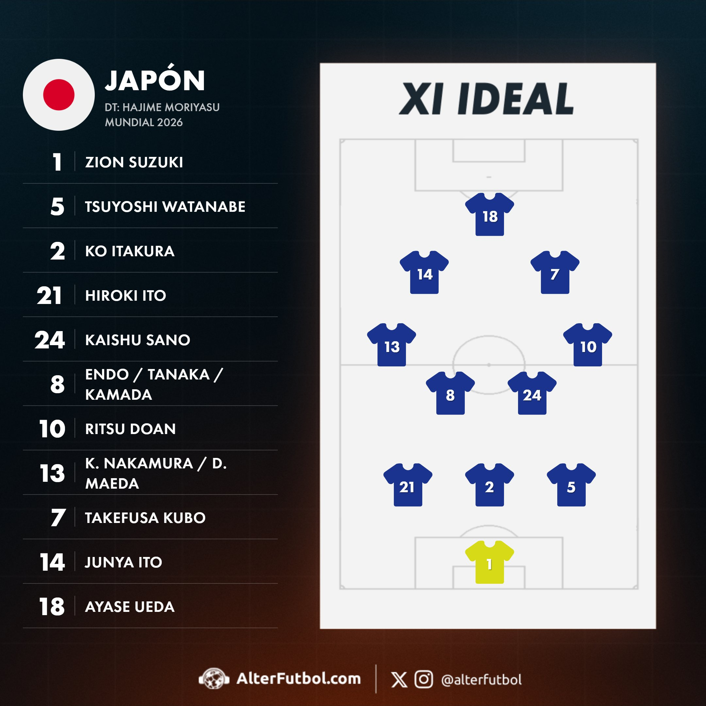
| Pos | Jugador | Edad | Club | País | ELO | Titular |
|---|---|---|---|---|---|---|
| GK | Zion Suzuki | 23 | Parma Calcio 1913 | Italia | N/D | Sí |
| GK | Keisuke Osako | 26 | Sanfrecce Hiroshima | Japón | N/D | No |
| GK | Tomoki Hayakawa | 27 | Kashima Antlers | Japón | 1410 | No |
| DEF | Hiroki Ito | 27 | Bayern Munich | Alemania | 2131 | Sí |
| DEF | Ko Itakura | 29 | AFC Ajax | Países Bajos | 1510 | Sí |
| DEF | Takehiro Tomiyasu | 27 | AFC Ajax | Países Bajos | 1510 | No |
| DEF | Tsuyoshi Watanabe | 29 | Feyenoord | Países Bajos | 1542 | Sí |
| DEF | Yukinari Sugawara | 25 | Werder Bremen | Alemania | 1477 | No |
| DEF | Shogo Taniguchi | 34 | Sint-Truidense VV | Bélgica | N/D | No |
| DEF | Ayumu Seko | 25 | Le Havre AC | Francia | N/D | No |
| DEF | Junnosuke Suzuki | 22 | FC Copenhague | Dinamarca | N/D | No |
| DEF | Yuto Nagatomo | 39 | FC Tokyo | Japón | N/D | No |
| MED | Wataru Endo (C) | 33 | Liverpool FC | Inglaterra | 1860 | Sí |
| MED | Kaishu Sano | 25 | FSV Mainz 05 | Alemania | 1568 | Sí |
| MED | Daichi Kamada | 29 | Crystal Palace | Inglaterra | 1630 | No |
| MED | Ao Tanaka | 27 | Leeds United | Inglaterra | 1549 | No |
| MED | Junya Ito | 27 | KRC Genk | Bélgica | 1520 | Sí |
| DEL | Takefusa Kubo ★ | 24 | Real Sociedad | España | 1568 | Sí |
| DEL | Ritsu Doan | 27 | Eintracht Frankfurt | Alemania | 1545 | Sí |
| DEL | Keito Nakamura | 25 | Stade de Reims | Francia | N/D | Sí |
| DEL | Daizen Maeda | 28 | Celtic FC | Escocia | 1595 | No |
| DEL | Ayase Ueda | 27 | Feyenoord | Países Bajos | 1542 | Sí |
| DEL | Koki Ogawa | 28 | NEC Nijmegen | Países Bajos | N/D | No |
| DEL | Keisuke Goto | 20 | Sint-Truidense VV | Bélgica | N/D | No |
| DEL | Kento Shiogai | 21 | VfL Wolfsburg | Alemania | 1440 | No |
| DEL | Yuito Suzuki | 24 | SC Freiburg | Alemania | 1636 | No |
Graham Potter implementa un 3-4-2-1 fluido: con balón muta a 3-2-5 cuando un volante asciende y los carrileros abren el campo; sin balón se compacta en 5-4-1 que invita al rival para recuperar en transición. Gyökeres (Arsenal) es la referencia única en punta y el gran activo ofensivo; Isak (Liverpool) regresa de lesión aunque con disponibilidad limitada. Lindelöf organiza la línea de tres defensores y Karlström aporta equilibrio en el doble pivote junto a Ayari. Kulusevski (lesión) es la gran baja: sin él, la creación recae casi por completo en Ayari y Gyökeres.
↗ Nota en AlterFutbol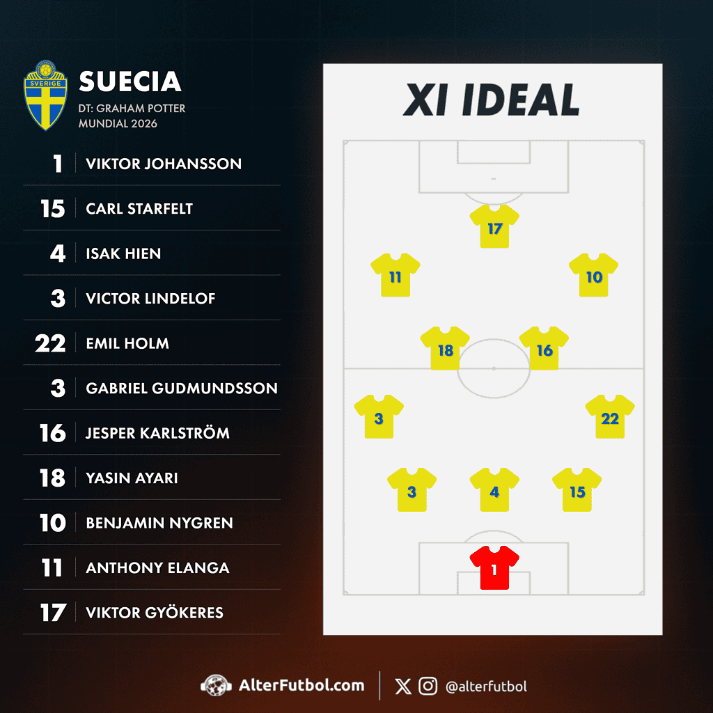
| Pos | Jugador | Edad | Club | País | ELO | Titular |
|---|---|---|---|---|---|---|
| GK | Viktor Johansson | 27 | Stoke City | Inglaterra | N/D | Sí |
| GK | Kristoffer Nordfeldt | 36 | AIK | Suecia | 1337 | No |
| GK | Jacob Widell Zetterström | 27 | Derby County | Inglaterra | N/D | No |
| DEF | Victor Lindelöf | 31 | Aston Villa | Inglaterra | 1861 | Sí |
| DEF | Isak Hien | 27 | Atalanta | Italia | 1676 | Sí |
| DEF | Carl Starfelt | 30 | Celta de Vigo | España | 1602 | Sí |
| DEF | Gustaf Lagerbielke | 26 | SC Braga | Portugal | 1606 | No |
| DEF | Hjalmar Ekdal | 27 | Burnley | Inglaterra | 1381 | No |
| DEF | Gabriel Gudmundsson | 27 | Leeds United | Inglaterra | 1549 | Sí |
| DEF | Daniel Svensson | 24 | Borussia Dortmund | Alemania | 1808 | No |
| DEF | Emil Holm | 25 | Bologna | Italia | 1631 | Sí |
| DEF | Eric Smith | 29 | FC St. Pauli | Alemania | 1321 | No |
| DEF | Elliot Stroud | 23 | Mjällby AIF | Suecia | 1413 | No |
| MED | Jesper Karlström | 30 | Udinese | Italia | 1483 | Sí |
| MED | Yasin Ayari | 22 | Brighton | Inglaterra | 1680 | Sí |
| MED | Lucas Bergvall | 20 | Tottenham | Inglaterra | 1686 | No |
| MED | Mattias Svanberg | 27 | Wolfsburg | Alemania | 1448 | No |
| MED | Ken Sema | 32 | Pafos FC | Chipre | 1471 | No |
| MED | Besfort Zeneli | 23 | Union Saint-Gilloise | Bélgica | 1666 | No |
| MED | Taha Ali | 27 | Malmö FF | Suecia | 1355 | No |
| MED | Alexander Bernhardsson | 27 | Holstein Kiel | Alemania | N/D | No |
| DEL | Viktor Gyökeres ★ | 27 | Arsenal | Inglaterra | 2106 | Sí |
| DEL | Alexander Isak | 26 | Liverpool | Inglaterra | 1860 | No |
| DEL | Anthony Elanga | 24 | Newcastle United | Inglaterra | 1731 | Sí |
| DEL | Benjamin Nygren | 24 | Celtic | Escocia | 1595 | Sí |
| DEL | Gustaf Nilsson | 28 | Club Brujas | Bélgica | 1697 | No |
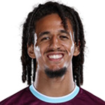
Lamouchi construye un 4-2-3-1 de identidad defensiva clara: bloque medio-bajo, presión coordinada al primer toque largo rival y salida directa en transición cuando aparece el espacio. Skhiri (Eintracht Frankfurt) es el engranaje del mediocampo —recupera, corre y distribuye—; Rami Khedira complementa como socio en el pivote doble. Mejbri actúa de mediapunta con libertad entre líneas; Elias Saad aporta desborde por izquierda. El ataque termina en Mastouri, delantero de área que busca las espaldas desde Rusia. Lamouchi llegó tras la mala Copa Africana con la misión declarada de pasar por primera vez la fase de grupos; el grupo no ayuda: Países Bajos, Japón y Suecia son rivales de primer nivel.
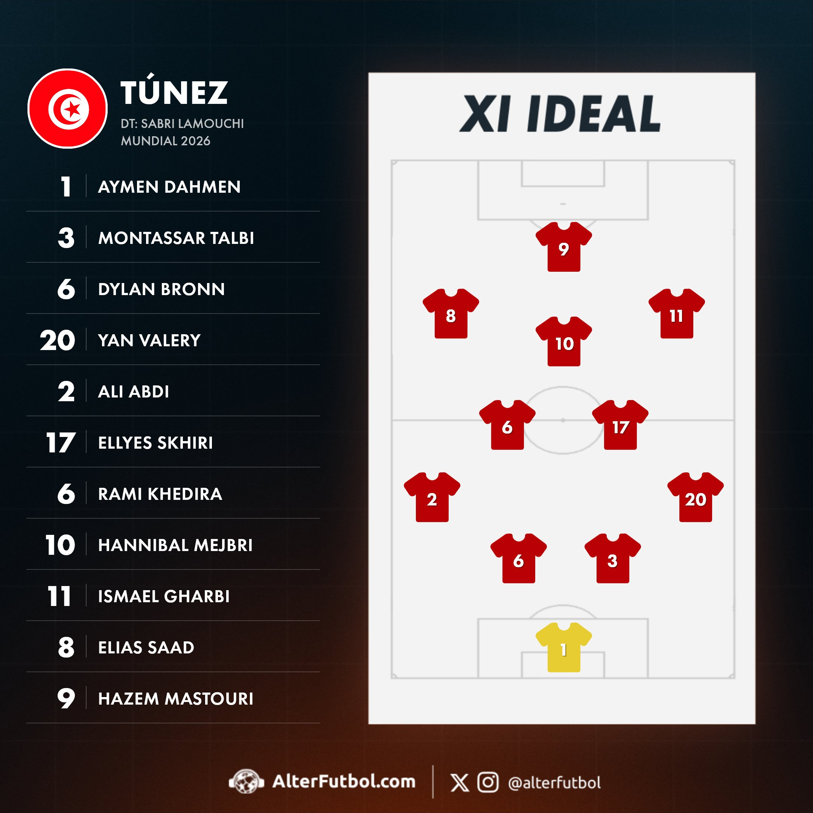
| Pos | Jugador | Edad | Club | País | ELO | Titular |
|---|---|---|---|---|---|---|
| GK | Aymen Dahmen | 29 | CS Sfaxien | Túnez | N/D | Sí |
| GK | Sabri Ben Hessen | 29 | Étoile du Sahel | Túnez | N/D | No |
| GK | Mouhib Chamakh | 24 | Club Africain | Túnez | N/D | No |
| DEF | Ali Abdi | 32 | OGC Nice | Francia | N/D | Sí |
| DEF | Montassar Talbi | 27 | FC Lorient | Francia | N/D | Sí |
| DEF | Dylan Bronn | 30 | Servette FC | Suiza | N/D | Sí |
| DEF | Mohamed A. Ben Hamida | 30 | Espérance Tunis | Túnez | N/D | No |
| DEF | Omar Rekik | 24 | NK Maribor | Eslovenia | N/D | No |
| DEF | Adem Arous | 21 | Kasımpaşa SK | Turquía | N/D | No |
| DEF | Moutaz Neffati | 21 | IFK Norrköping | Suecia | N/D | No |
| DEF | Raed Chikhaoui | 21 | US Monastir | Túnez | N/D | No |
| DEF | Yan Valery | 27 | BSC Young Boys | Suiza | N/D | Sí |
| MED | Ellyes Skhiri (C) | 31 | Eintracht Frankfurt | Alemania | 1545 | Sí |
| MED | Rani Khedira | 32 | 1. FC Union Berlin | Alemania | 1499 | Sí |
| MED | Hannibal Mejbri ★ | 23 | Burnley FC | Inglaterra | N/D | Sí |
| MED | Anis Ben Slimane | 25 | Norwich City | Inglaterra | N/D | No |
| MED | Mohamed Mahmoud | 26 | FC Lugano | Suiza | 1408 | No |
| DEL | Elias Saad | 26 | Hannover 96 | Alemania | N/D | Sí |
| DEL | Ismaël Gharbi | 22 | FC Augsburg | Alemania | 1515 | Sí |
| DEL | Khalil Ayari | 21 | Paris Saint-Germain | Francia | 2038 | No |
| DEL | Mortadha Ben Ouanes | 31 | Kasımpaşa SK | Turquía | N/D | No |
| DEL | Firas Chaouat | 30 | Club Africain | Túnez | N/D | No |
| DEL | Hazem Mastouri | 28 | Dynamo Makhachkala | Rusia | N/D | Sí |
| DEL | Sebastian Tounekti | 23 | Celtic FC | Escocia | 1595 | No |
| DEL | Ellias Achouri | 27 | FC Copenhague | Dinamarca | N/D | No |
| DEL | Rayan Elloumi | 18 | Vancouver Whitecaps | Canadá | N/D | No |
Bélgica · Egipto · Irán · Nueva Zelanda| # | Equipo | PJ | PG | PE | PP | GF | GC | DG | PTS |
|---|---|---|---|---|---|---|---|---|---|
| 1 | Bélgica |
0 | 0 | 0 | 0 | 0 | 0 | 0 | 0 |
| 2 | Egipto |
0 | 0 | 0 | 0 | 0 | 0 | 0 | 0 |
| 3 | Irán |
0 | 0 | 0 | 0 | 0 | 0 | 0 | 0 |
| 4 | Nueva Zelanda |
0 | 0 | 0 | 0 | 0 | 0 | 0 | 0 |
Sin sorteo — novedad respecto a Qatar 2022.
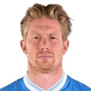
García estructura un mediocampo con Amadou Onana (Aston Villa) como volante de marca, Youri Tielemans como capitán en segunda línea y Kevin De Bruyne adelantado con tareas de creación en un esquema base de cuatro defensas. Jérémy Doku (Manchester City) y Leandro Trossard (Arsenal) aportan desborde por las bandas; Romelu Lukaku es la referencia de área aunque arrastra dudas físicas. La defensa central la formarán probablemente De Winter y Debast. Bélgica busca recuperarse del fracaso en fase de grupos de Qatar 2022. Novedad: Matias Fernández-Pardo eligió la nacionalidad belga durante la misma semana de la convocatoria.
↗ Nota en AlterFutbol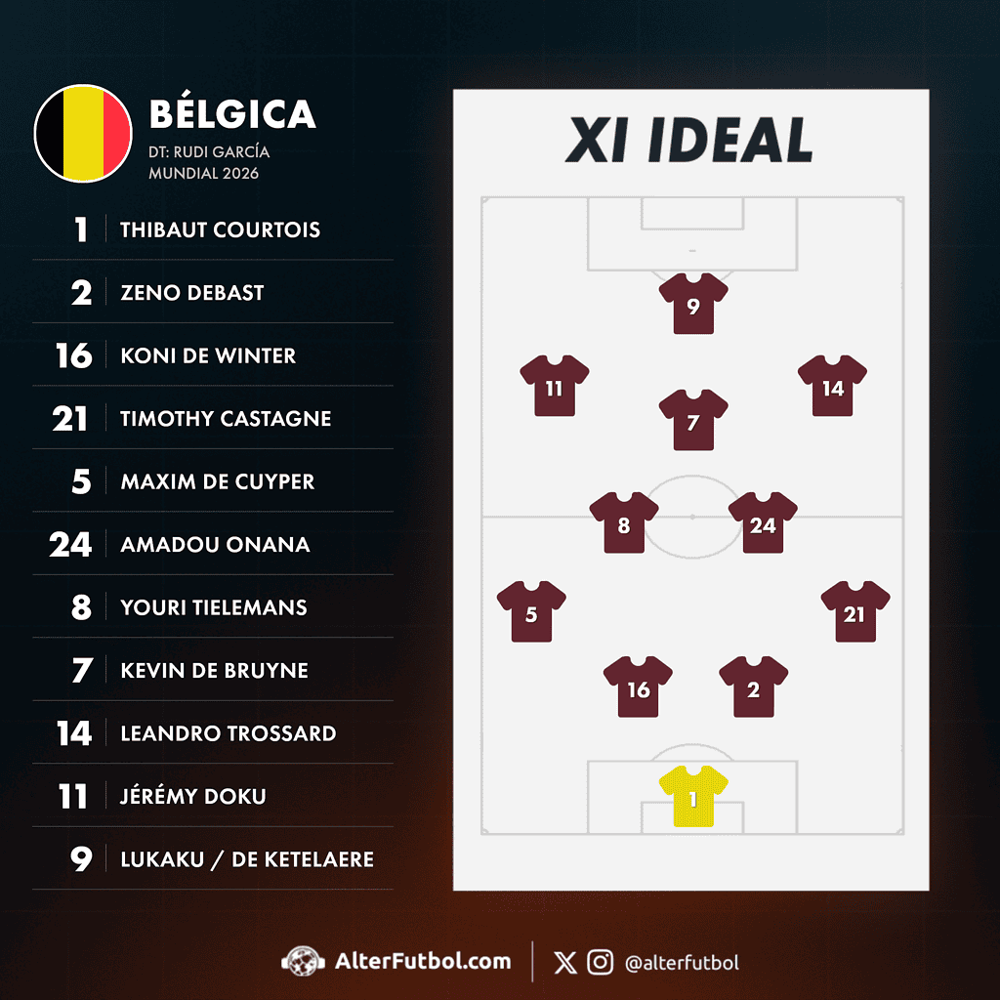
| Pos | Jugador | Edad | Club | País | ELO | Titular |
|---|---|---|---|---|---|---|
| GK | Thibaut Courtois | 34 | Real Madrid | España | 2012 | Sí |
| GK | Senne Lammens | 23 | Manchester United | Inglaterra | 1784 | No |
| GK | Mike Penders | 20 | Strasbourg | Francia | 1532 | No |
| DEF | Timothy Castagne | 30 | Fulham | Inglaterra | 1618 | Sí |
| DEF | Zeno Debast | 22 | Sporting de Lisboa | Portugal | 1804 | Sí |
| DEF | Maxim De Cuyper | 25 | Brighton | Inglaterra | 1680 | Sí |
| DEF | Koni De Winter | 23 | AC Milan | Italia | 1688 | Sí |
| DEF | Brandon Mechele | 32 | Club Brujas | Bélgica | 1697 | No |
| DEF | Thomas Meunier | 34 | Lille | Francia | 1624 | No |
| DEF | Diego Moreira | 21 | Strasbourg | Francia | 1532 | No |
| DEF | Nathan Ngoy | 22 | Lille | Francia | 1624 | No |
| DEF | Joaquin Seys | 21 | Club Brujas | Bélgica | 1697 | No |
| DEF | Arthur Theate | 25 | Eintracht Frankfurt | Alemania | 1545 | No |
| MED | Kevin De Bruyne ★ | 34 | Napoli | Italia | 1711 | Sí |
| MED | Amadou Onana | 24 | Aston Villa | Inglaterra | 1861 | Sí |
| MED | Nicolas Raskin | 25 | Rangers | Escocia | 1050 | No |
| MED | Youri Tielemans (C) | 28 | Aston Villa | Inglaterra | 1861 | Sí |
| MED | Hans Vanaken | 33 | Club Brujas | Bélgica | 1697 | No |
| MED | Axel Witsel | 37 | Girona | España | 1441 | No |
| DEL | Charles De Ketelaere | 25 | Atalanta | Italia | 1676 | No |
| DEL | Jérémy Doku | 24 | Manchester City | Inglaterra | 1889 | Sí |
| DEL | Matias Fernández-Pardo | 21 | Lille | Francia | 1624 | No |
| DEL | Romelu Lukaku | 33 | Napoli | Italia | 1711 | Sí |
| DEL | Dodi Lukebakio | 28 | Benfica | Portugal | 1729 | No |
| DEL | Alexis Saelemaekers | 26 | AC Milan | Italia | 1688 | No |
| DEL | Leandro Trossard | 31 | Arsenal | Inglaterra | 2106 | Sí |
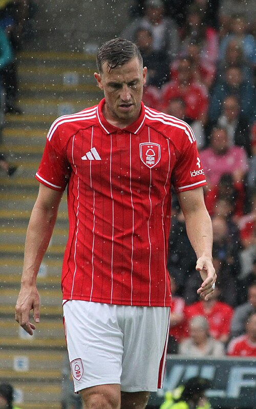
Nueva Zelanda despliega un 4-5-1 compacto: bloque defensivo cerrado en el mediocampo con Chris Wood (Nottingham Forest, capitán) como delantero solitario y Callum McCowatt como mediapunta con libertad de replegarse. Joe Bell y Marko Stamenic (Swansea) forman el doble pivote, con Stamenic como eje de distribución. La pelota parada es el arma ofensiva principal. El plantel llega como el primero 100% profesional de los All Whites, con jugadores distribuidos en ligas europeas. Regresan a un Mundial tras 16 años; en Sudáfrica 2010 se fueron invictos empatando los tres partidos, incluido un 1-1 ante Italia.
↗ Nota en AlterFutbol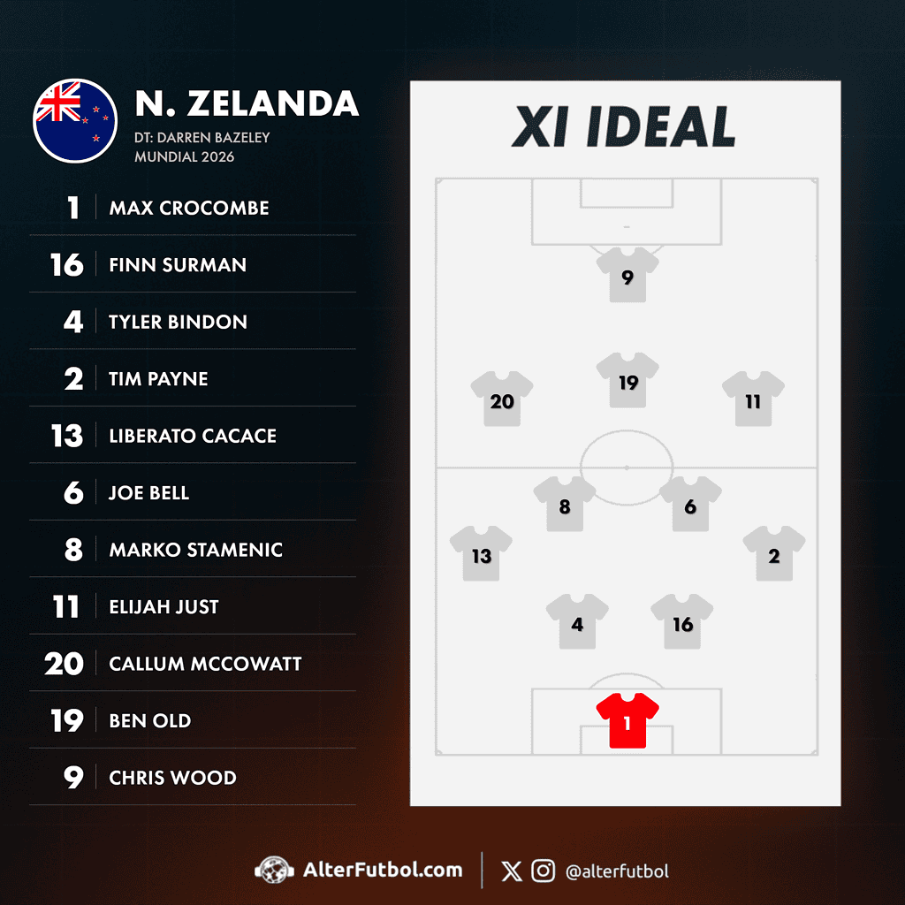
| Pos | Jugador | Edad | Club | País | ELO | Titular |
|---|---|---|---|---|---|---|
| GK | Max Crocombe | 32 | Millwall FC | Inglaterra | N/D | Sí |
| GK | Alex Paulsen | 23 | Lechia Gdansk | Polonia | N/D | No |
| GK | Michael Woud | 27 | Auckland FC | N. Zelanda | 1110 | No |
| DEF | Tyler Bindon | 21 | Sheffield United | Inglaterra | N/D | Sí |
| DEF | Michael Boxall | 37 | Minnesota United | EE.UU. | 1211 | No |
| DEF | Liberato Cacace | 25 | Wrexham | Gales | N/D | Sí |
| DEF | Francis de Vries | 31 | Auckland FC | N. Zelanda | 1110 | No |
| DEF | Callan Elliot | 26 | Auckland FC | N. Zelanda | 1110 | No |
| DEF | Tim Payne | 32 | Wellington Phoenix | N. Zelanda | 1063 | Sí |
| DEF | Nando Pijnaker | 27 | Portland Timbers | EE.UU. | 1201 | No |
| DEF | Tommy Smith | 36 | Exeter City | Inglaterra | N/D | No |
| DEF | Finn Surman | 22 | Portland Timbers | EE.UU. | 1201 | Sí |
| MED | Lachlan Bayliss | 23 | Newcastle Jets | N. Zelanda | N/D | No |
| MED | Joe Bell | 27 | Viking FK | Noruega | 1518 | Sí |
| MED | Matt Garbett | 24 | Peterborough United | Inglaterra | N/D | No |
| MED | Ben Old | 23 | Saint-Etienne | Francia | 1217 | Sí |
| MED | Alex Rufer | 29 | Wellington Phoenix | N. Zelanda | 1063 | No |
| MED | Sarpreet Singh | 27 | Wellington Phoenix | N. Zelanda | 1063 | No |
| MED | Marko Stamenic | 24 | Swansea City | Gales | N/D | Sí |
| MED | Ryan Thomas | 31 | PEC Zwolle | Países Bajos | 1225 | No |
| DEL | Kosta Barbarouses | 36 | W. Sydney Wanderers | Australia | N/D | No |
| DEL | Elijah Just | 26 | Motherwell AFC | Escocia | 1275 | Sí |
| DEL | Callum McCowatt | 27 | Silkeborg IF | Dinamarca | 1267 | Sí |
| DEL | Jesse Randall | 23 | Auckland FC | N. Zelanda | 1110 | No |
| DEL | Ben Waine | 24 | Port Vale FC | Inglaterra | N/D | No |
| DEL | Chris Wood ★(C) | 34 | Nottingham Forest | Inglaterra | 1658 | Sí |
Egipto Irán España · Cabo Verde · Arabia Saudita · Uruguay| # | Equipo | PJ | PG | PE | PP | GF | GC | DG | PTS |
|---|---|---|---|---|---|---|---|---|---|
| 1 | España |
0 | 0 | 0 | 0 | 0 | 0 | 0 | 0 |
| 2 | Uruguay |
0 | 0 | 0 | 0 | 0 | 0 | 0 | 0 |
| 3 | Arabia Saudita |
0 | 0 | 0 | 0 | 0 | 0 | 0 | 0 |
| 4 | Cabo Verde |
0 | 0 | 0 | 0 | 0 | 0 | 0 | 0 |
Sin sorteo — novedad respecto a Qatar 2022.
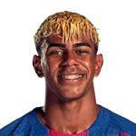
De la Fuente despliega un 4-3-3 con extremos puros, posesión asociada y verticalidad por bandas. Rodri baja entre líneas en la construcción; Pedri recibe en tres cuartos y libera al extremo o al interior; Fabián Ruiz conecta entre líneas y llega al área por izquierda. Cucurella se proyecta por el carril izquierdo; Porro se asocia con Yamal por la derecha. En defensa combinan bloque medio-alto con presión tras pérdida agresiva; el repliegue en 4-1-4-1 fue clave en la Eurocopa. Plan B: 4-2-3-1 con doble cinco y Dani Olmo de mediapunta. Primera convocatoria histórica sin ningún jugador del Real Madrid; el Barça aporta ocho. Gran incógnita física: Lamine Yamal (bíceps femoral desde el 23 de abril) y Nico Williams (isquios resentidos + pubalgia crónica) llegan al límite; ambos se perderán el debut ante Cabo Verde y se esperan para el cruce de 16avos.
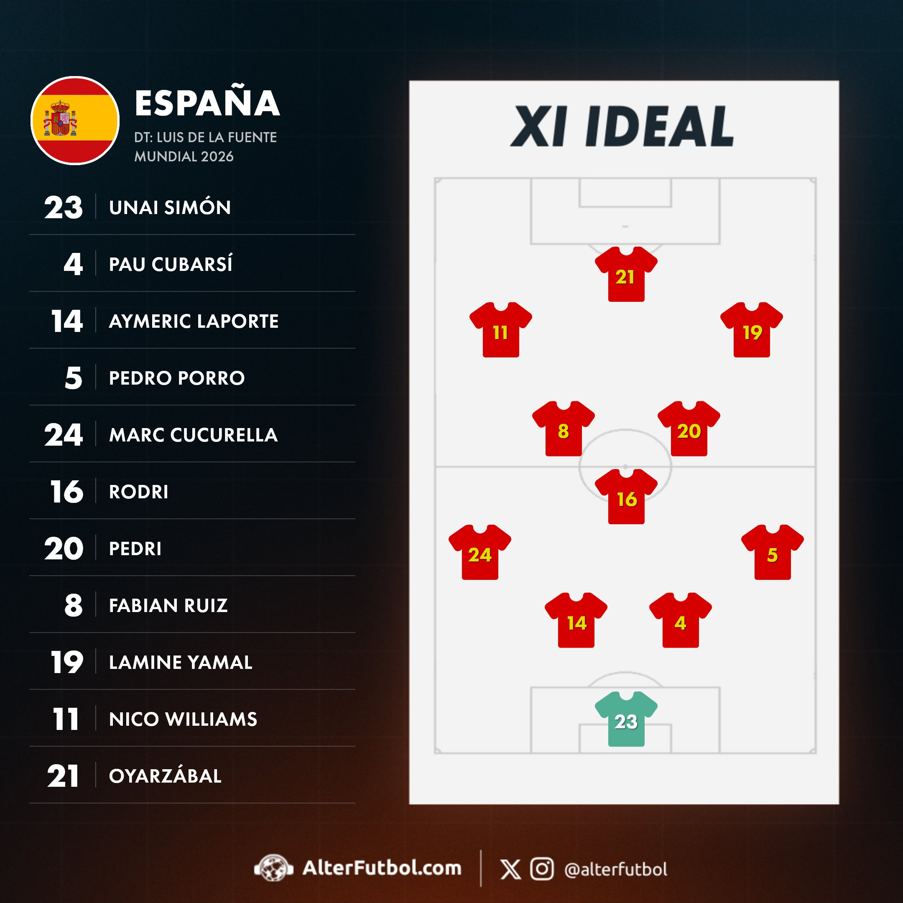
| Pos | Jugador | Edad | Club | País | ELO | Titular |
|---|---|---|---|---|---|---|
| GK | Unai Simón | 28 | Athletic Club | España | 1599 | Sí |
| GK | David Raya | 30 | Arsenal FC | Inglaterra | 1947 | No |
| GK | Joan García | 25 | FC Barcelona | España | 2019 | No |
| DEF | Aymeric Laporte | 31 | Athletic Club | España | 1599 | Sí |
| DEF | Pau Cubarsí | 19 | FC Barcelona | España | 2019 | Sí |
| DEF | Marc Pubill | 22 | Atlético Madrid | España | 1832 | No |
| DEF | Eric García | 25 | FC Barcelona | España | 2019 | No |
| DEF | Pedro Porro | 26 | Tottenham Hotspur | Inglaterra | 1686 | Sí |
| DEF | Marcos Llorente | 31 | Atlético Madrid | España | 1832 | No |
| DEF | Marc Cucurella | 27 | Chelsea FC | Inglaterra | 1740 | Sí |
| DEF | Alejandro Grimaldo | 30 | Bayer 04 Leverkusen | Alemania | 1784 | No |
| MED | Rodri (C) | 29 | Manchester City | Inglaterra | 1889 | Sí |
| MED | Martín Zubimendi | 27 | Arsenal FC | Inglaterra | 1947 | No |
| MED | Gavi | 21 | FC Barcelona | España | 2019 | No |
| MED | Pedri | 23 | FC Barcelona | España | 2019 | Sí |
| MED | Fabián Ruiz | 30 | Paris Saint-Germain | Francia | 2038 | Sí |
| MED | Mikel Merino | 29 | Arsenal FC | Inglaterra | 1947 | No |
| MED | Dani Olmo | 28 | FC Barcelona | España | 2019 | No |
| DEL | Lamine Yamal ★ | 18 | FC Barcelona | España | 2019 | Sí |
| DEL | Álex Baena | 24 | Atlético Madrid | España | 1832 | No |
| DEL | Nico Williams | 23 | Athletic Club | España | 1599 | Sí |
| DEL | Víctor Muñoz | 22 | CA Osasuna | España | 1516 | No |
| DEL | Ferrán Torres | 26 | FC Barcelona | España | 2019 | No |
| DEL | Mikel Oyarzabal | 29 | Real Sociedad | España | 1568 | Sí |
| DEL | Yéremy Pino | 23 | Crystal Palace | Inglaterra | 1630 | No |
| DEL | Borja Iglesias | 33 | RC Celta | España | 1602 | No |
Uruguay Arabia Saudita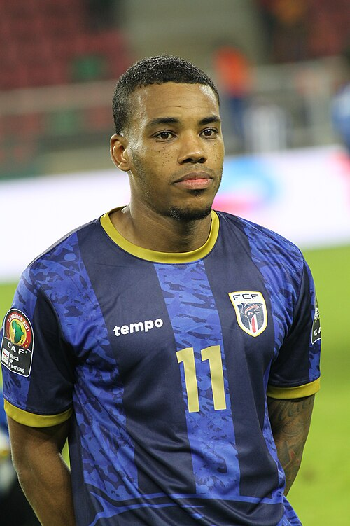
Bubista construyó un 4-2-3-1 —o 4-3-3 según el partido— de identidad táctica clara: solidez defensiva y salida rápida por los costados en contraataque. Kevin Pina Lenini (Krasnodar) es el eje del mediocampo; Logan Costa (Villarreal) lidera la defensa y Willy Semedo llega con una temporada de 22 goles en Chipre. Ryan Mendes y Garry Rodrigues son los históricos del grupo. Ante rivales europeos de élite el equipo podría profundizar el bloque defensivo o incluso pasar a cinco atrás. Con apenas 500.000 habitantes, Cabo Verde debuta en un Mundial —el mayor hito del fútbol caboverdiano— integrado en el Grupo H con España y Uruguay.
↗ Nota en AlterFutbol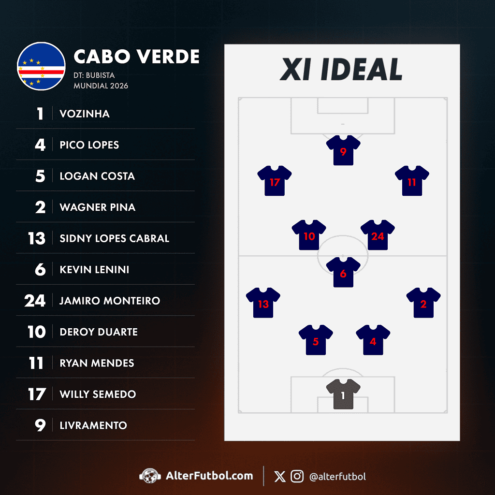
| Pos | Jugador | Edad | Club | País | ELO | Titular |
|---|---|---|---|---|---|---|
| GK | Vozinha | 38 | GD Chaves | Portugal | N/D | Sí |
| GK | C.J. dos Santos | 25 | San Diego FC | EE.UU. | N/D | No |
| GK | Márcio Rosa | 29 | PFC Montana | Bulgaria | N/D | No |
| DEF | Roberto Lopes | 33 | Shamrock Rovers | Irlanda | 1408 | Sí |
| DEF | Logan Costa | 25 | Villarreal | España | 1620 | Sí |
| DEF | Joao Paulo | 28 | FCSB | Rumania | N/D | No |
| DEF | Diney Borges | 31 | Al-Bataeh SCC | EAU | N/D | No |
| DEF | Stopira | 38 | SCU Torreense | Portugal | N/D | No |
| DEF | Steven Moreira | 31 | Columbus Crew | EE.UU. | 1323 | No |
| DEF | Wagner Pina | 23 | Trabzonspor | Turquía | 1416 | Sí |
| DEF | Sidny Lopes Cabral | 22 | SL Benfica | Portugal | 1729 | Sí |
| MED | Kelvin Pires | 26 | SJK | Finlandia | N/D | No |
| MED | Kevin Pina Lenini | 29 | FK Krasnodar | Rusia | 1580 | Sí |
| MED | Jamiro Monteiro | 32 | PEC Zwolle | Países Bajos | 1225 | Sí |
| MED | Deroy Duarte | 26 | PFC Ludogorets | Bulgaria | N/D | Sí |
| MED | Laros Duarte | 29 | Puskás Akadémia | Hungría | N/D | No |
| MED | Telmo Arcanjo | 24 | Vitória Guimarães | Portugal | N/D | No |
| MED | Yannick Semedo | 30 | Farense SC | Portugal | N/D | No |
| DEL | Ryan Mendes | 36 | Igdir FK | Turquía | N/D | Sí |
| DEL | Garry Rodrigues ★ | 35 | Apollon Limassol | Chipre | N/D | No |
| DEL | Willy Semedo | 32 | Omonoia Nicosia | Chipre | N/D | Sí |
| DEL | Jovane Cabral | 27 | Estrela Amadora | Portugal | N/D | No |
| DEL | Benchimol | 24 | Akron Tolyatti | Rusia | 1202 | No |
| DEL | Hélio Varela | 24 | Maccabi Tel Aviv | Israel | 1418 | No |
| DEL | Nuno da Costa | 35 | İstanbul Başakşehir | Turquía | N/D | No |
| DEL | Dailon Livramento | 25 | Casa Pia AC | Portugal | N/D | Sí |
 Francia ·
Francia ·  Senegal ·
Senegal ·  Irak ·
Irak ·  Noruega
Noruega| # | Equipo | PJ | PG | PE | PP | GF | GC | DG | PTS |
|---|---|---|---|---|---|---|---|---|---|
| 1 | Francia |
0 | 0 | 0 | 0 | 0 | 0 | 0 | 0 |
| 2 | Noruega |
0 | 0 | 0 | 0 | 0 | 0 | 0 | 0 |
| 3 | Senegal |
0 | 0 | 0 | 0 | 0 | 0 | 0 | 0 |
| 4 | Irak |
0 | 0 | 0 | 0 | 0 | 0 | 0 | 0 |
Sin sorteo — novedad respecto a Qatar 2022.
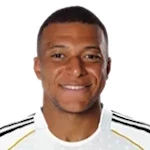
Deschamps convoca nueve delanteros sobre 26 —declaración explícita de intenciones ofensivas para quien históricamente priorizó la solidez sobre el espectáculo. Mbappé actúa como referencia central con libertad ofensiva; Dembélé, Thuram y Barcola aportan dinamismo por las bandas y Olise o Cherki creatividad desde el interior. Tchouaméni ejerce de eje defensivo con Rabiot y Zaïre-Emery (20 años) como apuesta de recambio generacional. Saliba y Upamecano forman la pareja de centrales titular; Maignan ocupa la portería. Francia lideró su grupo de clasificación UEFA con 16 de 18 puntos, el mejor registro europeo.
↗ Nota en AlterFutbol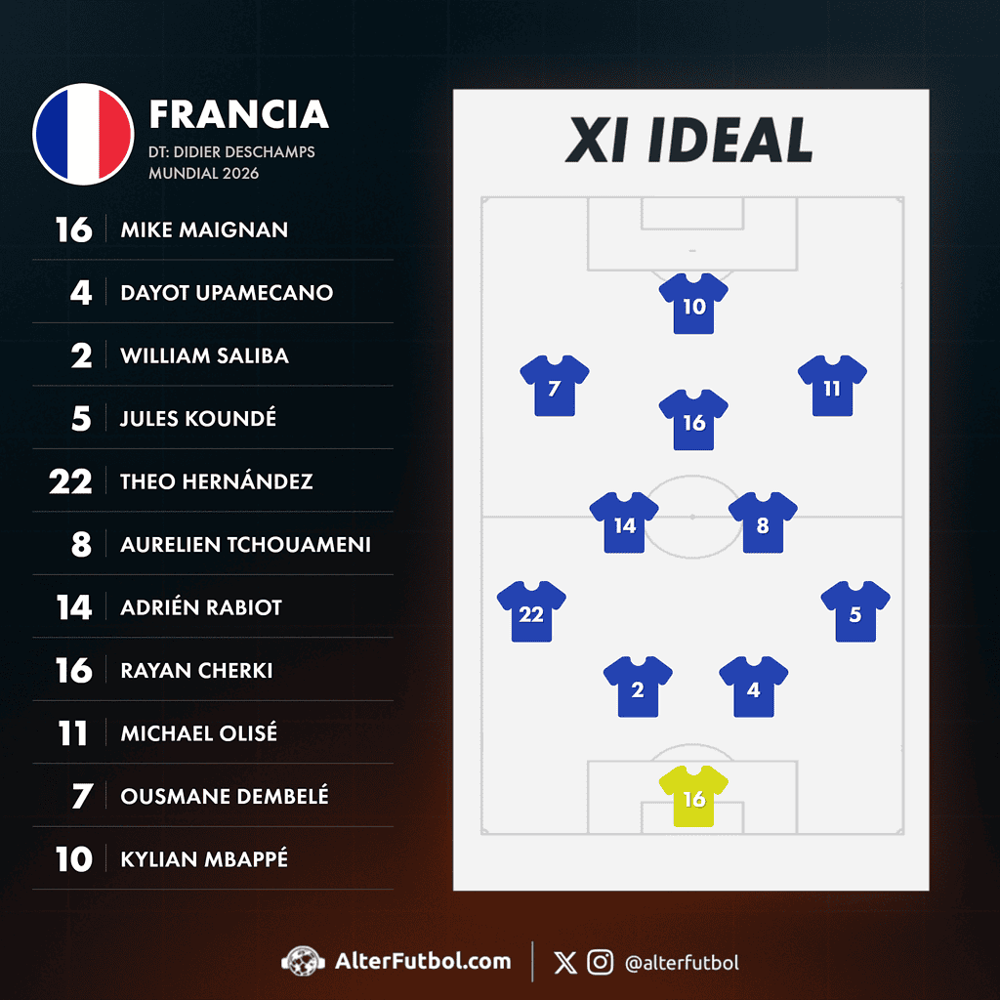
| Pos | Jugador | Edad | Club | País | ELO | Titular |
|---|---|---|---|---|---|---|
| GK | Mike Maignan | 30 | AC Milan | Italia | 1688 | Sí |
| GK | Robin Risser | 21 | Lens | Francia | 1610 | No |
| GK | Brice Samba | 32 | Rennes | Francia | 1534 | No |
| DEF | Jules Koundé | 27 | Barcelona | España | 2019 | Sí |
| DEF | William Saliba | 25 | Arsenal | Inglaterra | 2106 | Sí |
| DEF | Ibrahima Konaté | 26 | Liverpool | Inglaterra | 1860 | No |
| DEF | Dayot Upamecano | 27 | Bayern Munich | Alemania | 2131 | Sí |
| DEF | Maxence Lacroix | 26 | Crystal Palace | Inglaterra | 1630 | No |
| DEF | Lucas Hernández | 30 | PSG | Francia | 2038 | No |
| DEF | Théo Hernández | 28 | Al-Hilal | Arabia S. | 1629 | Sí |
| DEF | Malo Gusto | 23 | Chelsea | Inglaterra | 1740 | No |
| DEF | Lucas Digne | 32 | Aston Villa | Inglaterra | 1861 | No |
| MED | Aurélien Tchouaméni | 26 | Real Madrid | España | 2012 | Sí |
| MED | N'Golo Kanté | 35 | Fenerbahçe | Turquía | 1616 | No |
| MED | Adrien Rabiot | 31 | AC Milan | Italia | 1688 | Sí |
| MED | Manu Koné | 25 | AS Roma | Italia | 1717 | No |
| MED | Warren Zaïre-Emery | 20 | PSG | Francia | 2038 | No |
| DEL | Kylian Mbappé ★(C) | 27 | Real Madrid | España | 2012 | Sí |
| DEL | Ousmane Dembélé | 28 | PSG | Francia | 2038 | Sí |
| DEL | Marcus Thuram | 28 | Inter Milan | Italia | 1864 | No |
| DEL | Michael Olise | 24 | Bayern Munich | Alemania | 2131 | Sí |
| DEL | Bradley Barcola | 23 | PSG | Francia | 2038 | No |
| DEL | Rayan Cherki | 22 | Manchester City | Inglaterra | 1889 | Sí |
| DEL | Désiré Doué | 20 | PSG | Francia | 2038 | No |
| DEL | Maghnes Akliouche | 24 | Monaco | Francia | 1626 | No |
| DEL | Jean-Philippe Mateta | 28 | Crystal Palace | Inglaterra | 1630 | No |
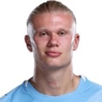
Solbakken organiza un 4-2-3-1 de construcción paciente desde atrás que se acelera en cuanto encuentra espacios. Sander Berge (Fulham) pivota y distribuye como organizador; Ødegaard (Arsenal, capitán con dudas físicas) recibe entre líneas con total libertad táctica. Antonio Nusa (RB Leipzig) desborda por la izquierda; Sørloth arranca abierto por la derecha y se tira al área. Erling Haaland es la referencia goleadora —55 tantos en la selección, con 16 en las clasificatorias— y el gran activo del equipo. La presión se ajusta al contexto: alta cuando el rival lo permite, media-baja ante equipos técnicamente superiores. Noruega regresa a un Mundial tras 28 años de ausencia.
↗ Nota en AlterFutbol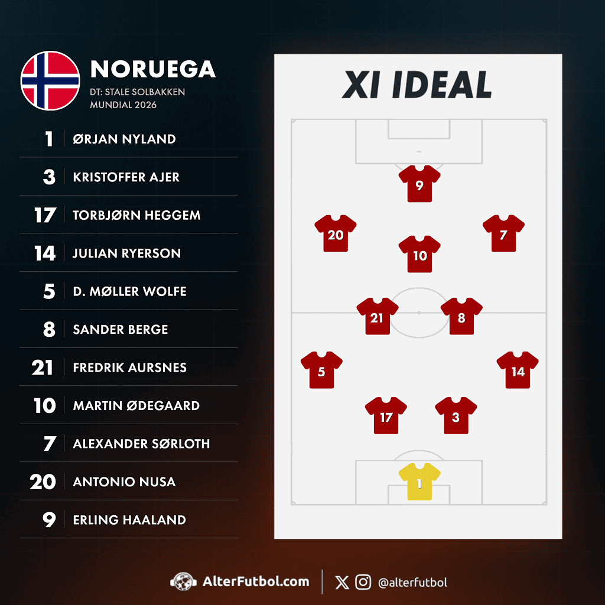
| Pos | Jugador | Edad | Club | País | ELO | Titular |
|---|---|---|---|---|---|---|
| GK | Ørjan Nyland | 35 | Sevilla FC | España | 1490 | Sí |
| GK | Mathias Selvik | 26 | Watford FC | Inglaterra | N/D | No |
| GK | Sondre Tangvik | 24 | Hamburger SV | Alemania | 1434 | No |
| DEF | Kristoffer Ajer | 27 | Brentford FC | Inglaterra | 1647 | Sí |
| DEF | Leo Østigård | 26 | Genoa CFC | Italia | N/D | No |
| DEF | Isak Heggem | 24 | Bologna FC | Italia | 1631 | Sí |
| DEF | Jonas Langås | 23 | Derby County | Inglaterra | N/D | No |
| DEF | Stian Falchener | 24 | Viking FK | Noruega | 1518 | No |
| DEF | Julian Ryerson | 28 | Dortmund | Alemania | 1808 | Sí |
| DEF | Jonas Holmgren Pedersen | 25 | Torino FC | Italia | N/D | No |
| DEF | Håkon Møller Wolfe | 26 | Wolverhampton | Inglaterra | 1456 | Sí |
| DEF | Fredrik Bjørkan | 27 | Bodø/Glimt | Noruega | 1692 | No |
| MED | Sander Berge | 28 | Fulham FC | Inglaterra | 1618 | Sí |
| MED | Berg | 25 | Bodø/Glimt | Noruega | 1692 | No |
| MED | Fredrik Aursnes | 30 | SL Benfica | Portugal | 1729 | Sí |
| MED | Martin Ødegaard (C) | 27 | Arsenal | Inglaterra | 2106 | Sí |
| MED | Kristian Thorstvedt | 26 | Sassuolo | Italia | 1458 | No |
| MED | Morten Thorsby | 29 | Cremonese | Italia | 1286 | No |
| MED | Tobias Aasgaard | 23 | Rangers FC | Escocia | 1476 | No |
| DEL | Alexander Sørloth | 30 | Atlético Madrid | España | 1832 | Sí |
| DEL | Erling Haaland ★ | 25 | Manchester City | Inglaterra | 1889 | Sí |
| DEL | Andreas Schjelderup | 22 | SL Benfica | Portugal | 1729 | No |
| DEL | Antonio Nusa | 23 | RB Leipzig | Alemania | 1686 | Sí |
| DEL | Oscar Bobb | 23 | Fulham FC | Inglaterra | 1618 | No |
| DEL | Jens Petter Hauge | 26 | Bodø/Glimt | Noruega | 1692 | No |
| DEL | Jørgen Strand Larsen | 26 | Crystal Palace | Inglaterra | 1630 | No |
Senegal Irak Argentina · Argelia · Austria · Jordania| # | Equipo | PJ | PG | PE | PP | GF | GC | DG | PTS |
|---|---|---|---|---|---|---|---|---|---|
| 1 | Argentina |
0 | 0 | 0 | 0 | 0 | 0 | 0 | 0 |
| 2 | Austria |
0 | 0 | 0 | 0 | 0 | 0 | 0 | 0 |
| 3 | Argelia |
0 | 0 | 0 | 0 | 0 | 0 | 0 | 0 |
| 4 | Jordania | 0 | 0 | 0 | 0 | 0 | 0 | 0 | 0 |
Sin sorteo — novedad respecto a Qatar 2022.
Rangnick imprime su 4-2-3-1 vertical y agresivo: gegenpressing coordinado que lidera el ránking continental en presión efectiva y transiciones rápidas en cuanto recupera la pelota. Schlager y Seiwald (ambos del RB Leipzig) forman el doble pivote; Baumgartner actúa como mediapunta y Sabitzer como falso extremo por la izquierda. Alaba (Real Madrid) regresa como referente emocional del vestuario pese a los pocos minutos acumulados por lesión. Con 14 de 26 convocados en la Bundesliga, la sintonía táctica con la selección es inmediata. Austria regresa a un Mundial tras 28 años, habiendo clasificado como primera de su grupo con 19 de 24 puntos.
↗ Nota en AlterFutbol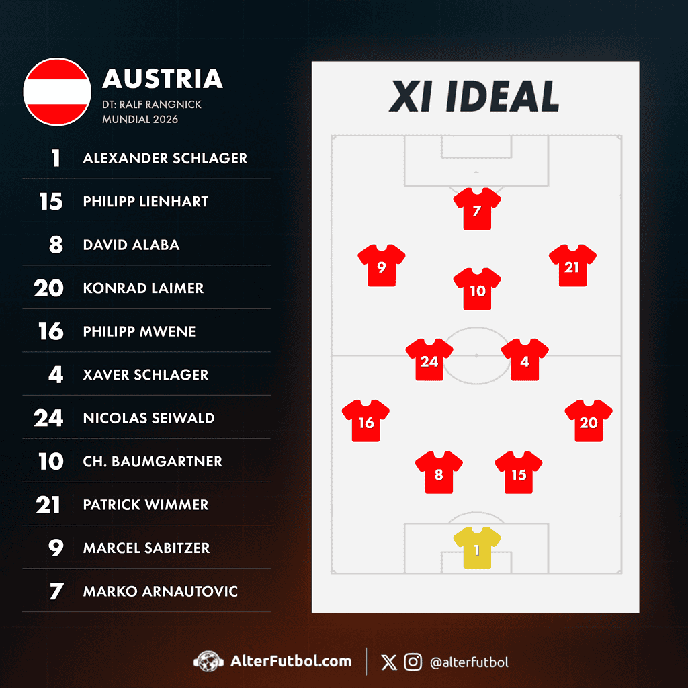
| Pos | Jugador | Edad | Club | País | ELO | Titular |
|---|---|---|---|---|---|---|
| GK | Alexander Schlager | 30 | RB Salzburg | Austria | 1410 | Sí |
| GK | Patrick Pentz | 29 | Brøndby IF | Dinamarca | 1377 | No |
| GK | Florian Wiegele | 25 | Viktoria Plzen | Chequia | 1556 | No |
| DEF | David Alaba ★(C) | 33 | Real Madrid CF | España | 2012 | Sí |
| DEF | Kevin Danso | 27 | Tottenham Hotspur | Inglaterra | 1686 | No |
| DEF | Stefan Posch | 29 | Mainz 05 | Alemania | 1568 | No |
| DEF | Philipp Lienhart | 29 | SC Freiburg | Alemania | 1636 | Sí |
| DEF | Philipp Mwene | 32 | Mainz 05 | Alemania | 1568 | Sí |
| DEF | Alexander Prass | 24 | Hoffenheim | Alemania | 1587 | No |
| DEF | Marco Friedl | 28 | Werder Bremen | Alemania | 1477 | No |
| DEF | Michael Svoboda | 27 | Venezia FC | Italia | N/D | No |
| DEF | David Affengruber | 25 | Elche CF | España | 1429 | No |
| MED | Xaver Schlager | 28 | RB Leipzig | Alemania | 1686 | Sí |
| MED | Nicolas Seiwald | 25 | RB Leipzig | Alemania | 1686 | Sí |
| MED | Marcel Sabitzer | 32 | Borussia Dortmund | Alemania | 1808 | Sí |
| MED | Florian Grillitsch | 30 | SC Braga | Portugal | 1606 | No |
| MED | Carney Chukwuemeka | 22 | Borussia Dortmund | Alemania | 1808 | No |
| MED | Romano Schmid | 26 | Werder Bremen | Alemania | 1477 | No |
| MED | Christoph Baumgartner | 26 | RB Leipzig | Alemania | 1686 | Sí |
| MED | Konrad Laimer | 28 | Bayern Munich | Alemania | 2131 | Sí |
| MED | Patrick Wimmer | 24 | Wolfsburg | Alemania | 1448 | Sí |
| MED | Paul Wanner | 20 | PSV Eindhoven | Países Bajos | 1726 | No |
| MED | Alessandro Schöpf | 32 | Wolfsberger AC | Austria | N/D | No |
| DEL | Marko Arnautovic | 37 | Crvena Zvezda | Serbia | 1604 | Sí |
| DEL | Michael Gregoritsch | 32 | FC Augsburg | Alemania | 1515 | No |
| DEL | Sasa Kalajdzic | 28 | LASK Linz | Austria | N/D | No |
Argentina Argelia Portugal · RD del Congo · Uzbekistán · Colombia| # | Equipo | PJ | PG | PE | PP | GF | GC | DG | PTS |
|---|---|---|---|---|---|---|---|---|---|
| 1 | Portugal |
0 | 0 | 0 | 0 | 0 | 0 | 0 | 0 |
| 2 | Colombia |
0 | 0 | 0 | 0 | 0 | 0 | 0 | 0 |
| 3 | RD del Congo | 0 | 0 | 0 | 0 | 0 | 0 | 0 | 0 |
| 4 | Uzbekistán |
0 | 0 | 0 | 0 | 0 | 0 | 0 | 0 |
Sin sorteo — novedad respecto a Qatar 2022.
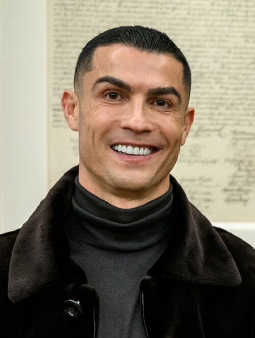
Roberto Martínez dispone un 4-3-3 con variante natural a 4-2-3-1 y presión alta organizada. La columna vertebral del mediocampo la forman Vitinha (PSG) como ordenador desde la salida, João Neves (PSG, 21 años) para la intensidad y verticalidad, y Bruno Fernandes (Man United) con licencia creativa total. Bernardo Silva cubre el extremo derecho o actúa como volante; Rafael Leão aporta desborde por la izquierda. Cristiano Ronaldo (41 años) es la referencia de área. La debilidad conocida: lentitud defensiva en transiciones y fragilidad ante la presión alta rival. Diogo Jota figura en la lista de 27 como miembro simbólico.
↗ Nota en AlterFutbol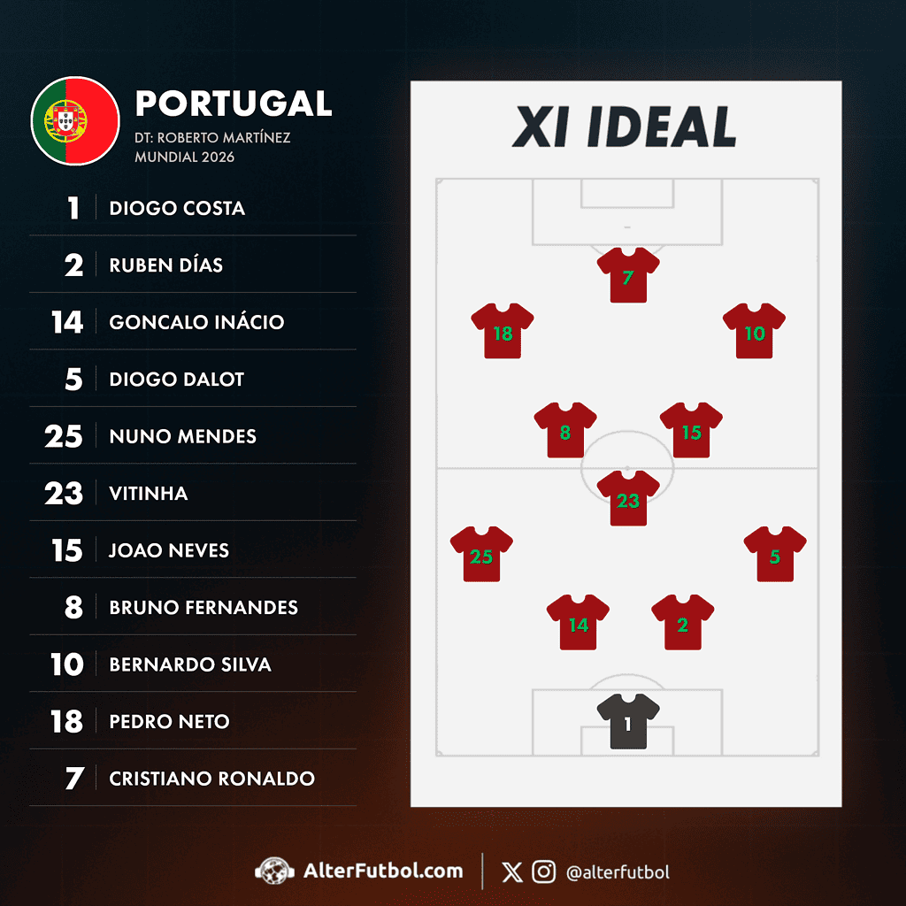
| Pos | Jugador | Edad | Club | País | ELO | Titular |
|---|---|---|---|---|---|---|
| GK | Diogo Costa | 26 | FC Porto | Portugal | 1712 | Sí |
| GK | José Sá | 33 | Wolverhampton | Inglaterra | 1456 | No |
| GK | Rui Silva | 32 | Sporting CP | Portugal | 1804 | No |
| DEF | Diogo Dalot | 27 | Manchester United | Inglaterra | 1784 | Sí |
| DEF | João Cancelo | 31 | Barcelona | España | 2019 | No |
| DEF | Nélson Semedo | 32 | Fenerbahçe | Turquía | 1616 | No |
| DEF | Nuno Mendes | 23 | Paris Saint-Germain | Francia | 2038 | Sí |
| DEF | Matheus Nunes | 27 | Manchester City | Inglaterra | 1889 | No |
| DEF | Rúben Dias | 28 | Manchester City | Inglaterra | 1889 | Sí |
| DEF | Gonçalo Inácio | 24 | Sporting CP | Portugal | 1804 | Sí |
| DEF | Renato Veiga | 22 | Villarreal | España | 1620 | No |
| DEF | Tomás Araújo | 24 | Benfica | Portugal | 1729 | No |
| MED | Rúben Neves | 29 | Al-Hilal | Arabia S. | 1629 | No |
| MED | Samuel Costa | 25 | Mallorca | España | 1507 | No |
| MED | João Neves | 21 | Paris Saint-Germain | Francia | 2038 | Sí |
| MED | Vitinha | 26 | Paris Saint-Germain | Francia | 2038 | Sí |
| MED | Bruno Fernandes | 31 | Manchester United | Inglaterra | 1784 | Sí |
| MED | Bernardo Silva | 31 | Manchester City | Inglaterra | 1889 | Sí |
| DEL | João Félix | 26 | Al-Nassr | Arabia S. | 1548 | No |
| DEL | Francisco Trincão | 26 | Sporting CP | Portugal | 1804 | No |
| DEL | Francisco Conceição | 23 | Juventus | Italia | 1740 | No |
| DEL | Pedro Neto | 26 | Chelsea | Inglaterra | 1740 | Sí |
| DEL | Rafael Leão | 26 | AC Milan | Italia | 1688 | No |
| DEL | Gonçalo Guedes | 29 | Real Sociedad | España | 1568 | No |
| DEL | Gonçalo Ramos | 24 | Paris Saint-Germain | Francia | 2038 | No |
| DEL | Cristiano Ronaldo ★(C) | 41 | Al-Nassr | Arabia S. | 1548 | Sí |
Lorenzo trabaja desde 2022 con un 4-2-3-1 flexible que muta a 4-3-3 o 4-3-1-2 según el rival. Bloque medio-alto con presión por zonas; la falta táctica aparece como primer recurso tras pérdida en mitad de cancha. El doble cinco opera con Jefferson Lerma como recuperador y Richard Ríos con más dinamismo, mientras Jhon Arias repliega por el carril derecho para liberar a James Rodríguez del trabajo defensivo. La banda izquierda está potenciada al máximo: todo se construye para que Luis Díaz reciba con ventaja y desate la contra. La debilidad estructural es la dependencia creativa del capitán, que suma apenas 130 minutos en 2026 por problemas físicos en Minneapolis; si James no llega bien, el plantel carece de reemplazo de nivel similar.
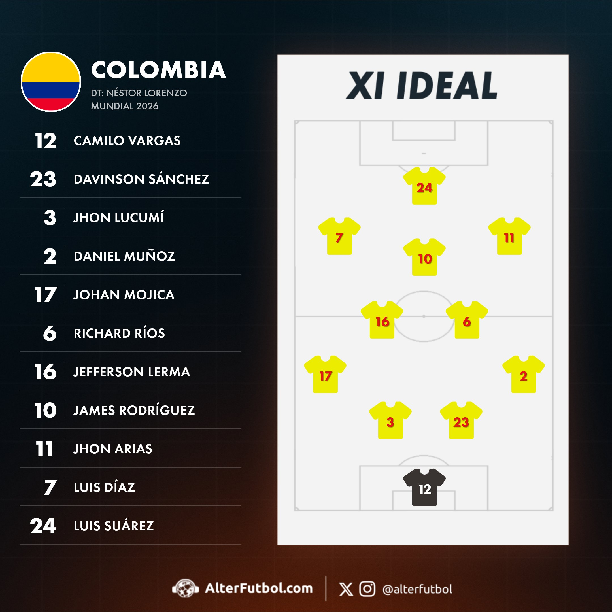
| Pos | Jugador | Edad | Club | País | ELO | Titular |
|---|---|---|---|---|---|---|
| GK | David Ospina | 37 | Atlético Nacional | Colombia | N/D | No |
| GK | Camilo Vargas | 37 | Atlas FC | México | N/D | Sí |
| GK | Álvaro Montero | 31 | Vélez Sarsfield | Argentina | N/D | No |
| DEF | Jhon Lucumí | 27 | Bologna FC 1909 | Italia | 1631 | Sí |
| DEF | Davinson Sánchez | 29 | Galatasaray SK | Turquía | 1641 | Sí |
| DEF | Yerry Mina | 31 | Cagliari Calcio | Italia | 1409 | No |
| DEF | Willer Ditta | 28 | Cruz Azul | México | 1448 | No |
| DEF | Daniel Muñoz | 29 | Crystal Palace | Inglaterra | 1630 | Sí |
| DEF | Santiago Arias | 34 | Independiente | Argentina | N/D | No |
| DEF | Johan Mojica | 33 | RCD Mallorca | España | 1494 | Sí |
| DEF | Déiver Machado | 32 | FC Nantes | Francia | N/D | No |
| MED | Richard Ríos | 25 | SL Benfica | Portugal | 1729 | Sí |
| MED | Jefferson Lerma | 31 | Crystal Palace | Inglaterra | 1630 | Sí |
| MED | Kevin Castaño | 25 | River Plate | Argentina | 1421 | No |
| MED | Gustavo Puerta | 22 | Racing Santander | España | N/D | No |
| MED | Juan Portilla | 27 | Athletico Paranaense | Brasil | N/D | No |
| MED | Juan Fernando Quintero | 33 | River Plate | Argentina | 1421 | No |
| MED | Jhon Arias | 28 | SE Palmeiras | Brasil | 1529 | Sí |
| MED | Jorge Carrascal | 28 | CR Flamengo | Brasil | 1530 | No |
| MED | James Rodríguez (C) | 34 | Minnesota United FC | EE.UU. | N/D | Sí |
| DEL | Luis Díaz ★ | 29 | Bayern Múnich | Alemania | 2131 | Sí |
| DEL | Luis Suárez | 28 | Sporting CP | Portugal | 1804 | Sí |
| DEL | Jhon Córdoba | 33 | FK Krasnodar | Rusia | 1580 | No |
| DEL | Andrés Gómez | 23 | CR Vasco da Gama | Brasil | N/D | No |
| DEL | Cucho Hernández | 27 | Real Betis | España | 1664 | No |
| DEL | Jaminton Campaz | 26 | Rosario Central | Argentina | N/D | No |
Uzbekistán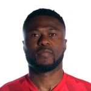
Desabre organiza un 4-3-3 que prioriza el orden defensivo y la salida por contragolpe: bloque medio, cuidado de espacios y velocidad por las bandas. Chancel Mbemba (capitán) y Axel Tuanzebe —héroe del repechaje con su gol en el minuto 100 ante Marruecos— forman la zaga; Aaron Wan-Bissaka aporta experiencia de Premier por la derecha y Masuaku proyección por la izquierda. Noah Sadiki (Sunderland, 21 años) es el creativo del mediocampo; Cédric Bakambu (35) aguanta el balón arriba y Yoane Wissa (Newcastle) regresa de lesión como figura ofensiva. RD Congo regresa a un Mundial 52 años después de su única participación como Zaire en 1974.
↗ Nota en AlterFutbol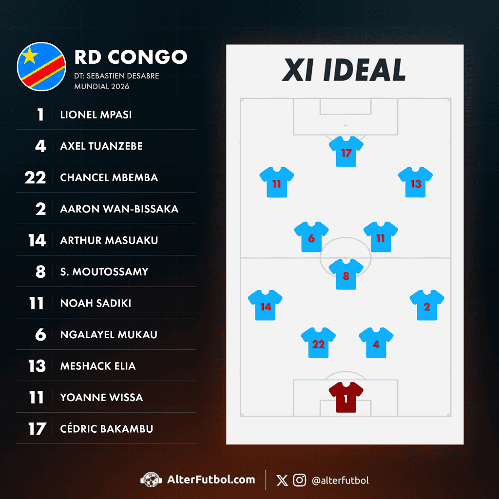
| Pos | Jugador | Edad | Club | País | ELO | Titular |
|---|---|---|---|---|---|---|
| GK | Lionel Mpasi | 31 | AC Le Havre | Francia | 1314 | Sí |
| GK | Timothy Fayulu | 26 | FC Noah | Armenia | 1343 | No |
| GK | Mattieu Epolo | 21 | Standard Lieja | Bélgica | 1318 | No |
| DEF | Chancel Mbemba ★(C) | 31 | LOSC Lille | Francia | 1624 | Sí |
| DEF | Axel Tuanzebe | 28 | Burnley FC | Inglaterra | 1381 | Sí |
| DEF | Rocky Bushiri | 26 | Hibernian FC | Escocia | 1310 | No |
| DEF | Steve Kapuadi | 28 | Widzew Lodz | Polonia | 1203 | No |
| DEF | Dylan Batubinsika | 30 | AEL Larissa | Grecia | N/D | No |
| DEF | Aaron Wan-Bissaka | 28 | West Ham United | Inglaterra | 1573 | Sí |
| DEF | Gédéon Kalulu | 28 | Aris Limassol | Chipre | N/D | No |
| DEF | Arthur Masuaku | 32 | RC Lens | Francia | 1610 | Sí |
| DEF | Joris Kayembe | 31 | RKC Genk | Bélgica | N/D | No |
| MED | Noah Sadiki | 21 | Sunderland AFC | Inglaterra | 1516 | Sí |
| MED | Charles Pickel | 29 | RCD Espanyol | España | 1459 | No |
| MED | Samuel Moutussamy | 29 | Atromitos FC | Grecia | N/D | Sí |
| MED | Ngal'ayel Mukau | 21 | LOSC Lille | Francia | 1624 | Sí |
| MED | Edo Kayembe | 27 | Watford FC | Inglaterra | N/D | No |
| MED | Nathanael Mbuku | 24 | Montpellier HSC | Francia | N/D | No |
| DEL | Brian Cipenga | 27 | CD Castellón | España | N/D | No |
| DEL | Gaël Kakuta | 34 | AEL Limassol | Chipre | N/D | No |
| DEL | Meschack Elía | 28 | Alanyaspor | Turquía | 1255 | Sí |
| DEL | Théo Bongonda | 30 | Spartak Moscow | Rusia | 990 | No |
| DEL | Cédric Bakambu | 35 | Real Betis | España | 1664 | Sí |
| DEL | Yoane Wissa | 29 | Newcastle United | Inglaterra | 1731 | Sí |
| DEL | Fiston Kalala Mayele | 31 | Pyramids FC | Egipto | 1502 | No |
| DEL | Simon Banza | 29 | Al-Jazira Club | EAU | N/D | No |
Inglaterra · Croacia · Ghana · Panamá| # | Equipo | PJ | PG | PE | PP | GF | GC | DG | PTS |
|---|---|---|---|---|---|---|---|---|---|
| 1 | Inglaterra |
0 | 0 | 0 | 0 | 0 | 0 | 0 | 0 |
| 2 | Croacia |
0 | 0 | 0 | 0 | 0 | 0 | 0 | 0 |
| 3 | Ghana | 0 | 0 | 0 | 0 | 0 | 0 | 0 | 0 |
| 4 | Panamá |
0 | 0 | 0 | 0 | 0 | 0 | 0 | 0 |
Sin sorteo — novedad respecto a Qatar 2022.
Tuchel implementa un 4-2-3-1 base que muta a 3-2-5 en fase ofensiva: los laterales se invierten sumándose al mediocampo mientras los centrales forman un fondo de tres con el volante retrasado. Declan Rice (con 4 asistencias en clasificatorias) ejerce de ancla defensiva junto a Elliot Anderson; Jude Bellingham opera como mediapunta con proyección al área. Bukayo Saka desequilibra por la derecha; Marcus Rashford (llegado al Barça) amenaza en profundidad por la izquierda y Harry Kane actúa como referencia de área. La convocatoria prescinde de Foden, Cole Palmer y Trent Alexander-Arnold, e incorpora nueve debutantes mundialistas. Ivan Toney sorprende con 32 goles en 32 partidos en la Saudi Pro League.
↗ Nota en AlterFutbol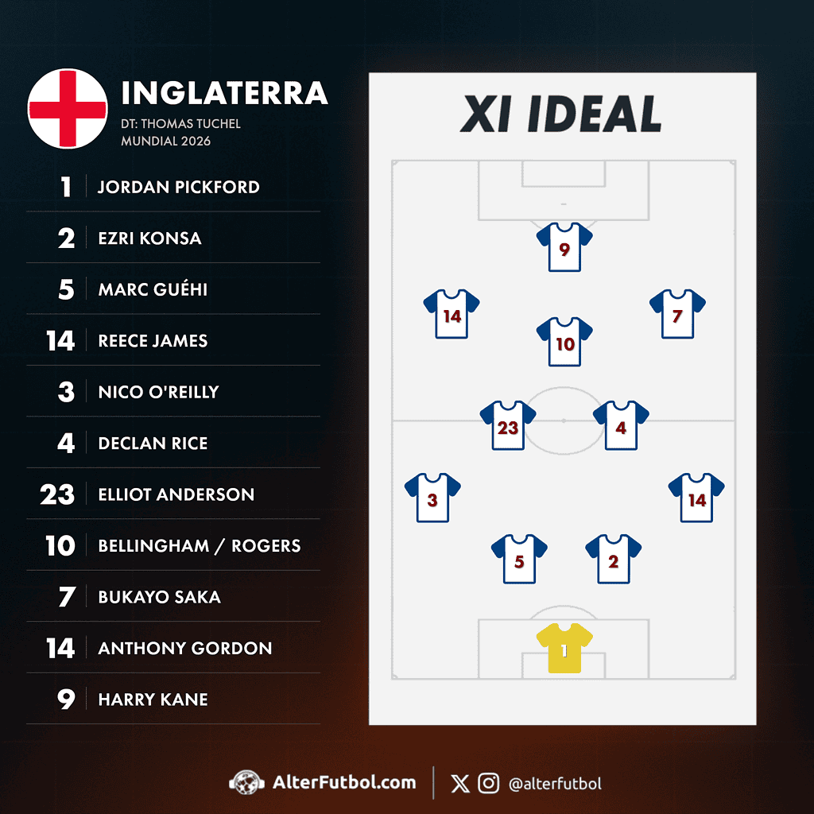
| Pos | Jugador | Edad | Club | País | ELO | Titular |
|---|---|---|---|---|---|---|
| GK | Jordan Pickford | 32 | Everton FC | Inglaterra | 1611 | Sí |
| GK | Dean Henderson | 29 | Crystal Palace | Inglaterra | 1630 | No |
| GK | James Trafford | 23 | Manchester City | Inglaterra | 1889 | No |
| DEF | Reece James | 26 | Chelsea FC | Inglaterra | 1740 | Sí |
| DEF | Marc Guéhi | 25 | Manchester City | Inglaterra | 1889 | Sí |
| DEF | John Stones | 31 | Manchester City | Inglaterra | 1889 | No |
| DEF | Tino Livramento | 23 | Newcastle United | Inglaterra | 1731 | No |
| DEF | Ezri Konsa | 28 | Aston Villa | Inglaterra | 1861 | Sí |
| DEF | Dan Burn | 33 | Newcastle United | Inglaterra | 1731 | No |
| DEF | Jarrel Quansah | 23 | Bayer 04 Leverkusen | Alemania | 1784 | No |
| DEF | Nico O'Reilly | 21 | Manchester City | Inglaterra | 1889 | Sí |
| DEF | Djed Spence | 25 | Tottenham Hotspur | Inglaterra | 1686 | No |
| MED | Declan Rice | 27 | Arsenal FC | Inglaterra | 2106 | Sí |
| MED | Jude Bellingham | 22 | Real Madrid CF | España | 2012 | Sí |
| MED | Kobbie Mainoo | 21 | Manchester United | Inglaterra | 1784 | No |
| MED | Elliot Anderson | 23 | Nottingham Forest | Inglaterra | 1658 | Sí |
| MED | Morgan Rogers | 23 | Aston Villa | Inglaterra | 1861 | No |
| MED | Jordan Henderson | 35 | Brentford FC | Inglaterra | 1647 | No |
| DEL | Harry Kane ★(C) | 32 | Bayern Munich | Alemania | 2131 | Sí |
| DEL | Bukayo Saka | 24 | Arsenal FC | Inglaterra | 2106 | Sí |
| DEL | Marcus Rashford | 28 | FC Barcelona | España | 2019 | No |
| DEL | Anthony Gordon | 25 | Newcastle United | Inglaterra | 1731 | Sí |
| DEL | Eberechi Eze | 27 | Arsenal FC | Inglaterra | 2106 | No |
| DEL | Noni Madueke | 24 | Arsenal FC | Inglaterra | 2106 | No |
| DEL | Ollie Watkins | 30 | Aston Villa | Inglaterra | 1861 | No |
| DEL | Ivan Toney | 30 | Al-Ahli Saudi FC | Arabia Saudita | 1200 | No |
Croacia Panamá| # | Grp | Equipo | PJ | PG | PE | PP | GF | GC | DG | PTS |
|---|
21 selecciones han publicado sus listas en AlterFutbol entre el 11 mayo (Bosnia, primera) y el 26 mayo 2026 (Estados Unidos). Más Japón, Túnez y Curazao por carga manual. 24 con análisis completo. Las marcadas con ✓ Detallado tienen análisis completo en este documento.
| Grupo | Selección | DT | Sistema | Figura clave | Dato destacado | Estado |
|---|---|---|---|---|---|---|
| A MEX · ZAF KOR · CZE |
Corea del Sur |
Hong Myung-bo | 3-4-2-1 | Son Heung-min ★(C), Lee Kang-In (PSG), Castrop (1° naturalizado) | 12° Mundial · 0-4 vs Costa de Marfil en marzo (alarma) | ✓ Detallado |
| B CAN · BIH QAT · SUI |
Bosnia y Herz. |
Sergej Barbarez | 4-4-2 | Edin Džeko (C, 40 años), Demirović | 1ª lista del mundial · eliminó a Italia por penales | ✓ Detallado |
| Suiza |
Murat Yakin | 4-3-3 | Granit Xhaka (C), Akanji, Embolo | Sin ganar en KO desde 1938 · lista filtrada por Blick | ✓ Detallado | |
| C BRA · MAR HTI · SCO |
Brasil |
Carlo Ancelotti | 4-2-3-1 | Neymar Jr. (sorpresa), Vinicius Jr., Rodrygo | 1er DT extranjero en dirigir Brasil en un Mundial | ✓ Detallado |
| Haití |
Sébastien Migné | 4-3-3 | Duckens Nazon, Frantzdy Pierrot | Regresa al Mundial tras 52 años (último: Alemania 1974) | ✓ Detallado | |
| Escocia |
Steve Clarke | 3-4-3 | John McGinn (C), Andy Robertson | Regresa al Mundial tras 28 años · clasificó vs Dinamarca 4-2 | ✓ Detallado | |
| D USA · PRY AUS · TUR |
Estados Unidos |
Mauricio Pochettino | 4-2-3-1 | Christian Pulisic (C), Weston McKennie | Primera Copa del Mundo como co-sede en 32 años (desde 1994) | ✓ Detallado |
| E GER · CUW CIV · ECU |
Alemania |
Julian Nagelsmann | 4-2-3-1 | Florian Wirtz, Jamal Musiala, Kai Havertz | Cayó en fase de grupos en 2 mundiales seguidos · generación Wirtz-Musiala | ✓ Detallado |
| Costa de Marfil |
Emerse Faé | 4-3-3 | Sébastien Haller, Simon Adingra, Franck Kessié | 4° Mundial · regresa tras 12 años de ausencia (Brasil 2014) | ✓ Detallado | |
| Curazao |
Dick Advocaat | 4-3-3 | Jürgen Locadia, Leandro Bacuna (C), Armando Obispo (PSV) | 1er Mundial · país más pequeño en jugar una Copa del Mundo (150K hab.) | ✓ Detallado | |
| F NED · JPN SWE · TUN |
Suecia |
Graham Potter | 3-4-2-1 | Viktor Gyökeres (Arsenal, ELO 2106), Elanga | Sin Kulusevski (rodilla) · Bardghji la gran sorpresa afuera | ✓ Detallado |
| Japón |
Hajime Moriyasu | 3-4-2-1 | Takefusa Kubo (Real Sociedad), Hiroki Ito (Bayern), Ueda (25 goles) | 8° Mundial · Mitoma y Minamino lesionados · carga manual | ✓ Detallado | |
| Túnez |
Sabri Lamouchi | 4-2-3-1 | Hannibal Mejbri, Ellyes Skhiri (C), Rami Khedira | 7° Mundial · nunca pasó fase de grupos · objetivo declarado superarla | ✓ Detallado | |
| G BEL · EGY IRN · NZL |
Bélgica |
Rudi García | 4-3-3 | Tielemans (C), De Bruyne, Lukaku (Napoli) | Sorpresa: Matías Fernández-Pardo eligió BEL esta semana | ✓ Detallado |
| Nueva Zelanda |
Darren Bazeley | 4-4-2 | Chris Wood (C), Joe Bell, Clayton Lewis | 3° Mundial · regresa tras 16 años · 100% profesional | ✓ Detallado | |
| H ESP · CPV KSA · URU |
España |
Luis de la Fuente | 4-3-3 | Lamine Yamal ★, Pedri, Nico Williams, Rodri (C) | 1ª conv. sin Real Madrid · Barça aporta 8 · Yamal y Nico llegan lesionados | ✓ Detallado |
| Cabo Verde |
Pedro "Bubista" Brito | 4-3-3 | Garry Rodrigues, Stopira, Jovane Cabral | 1° Mundial histórico · 500k habitantes · diáspora europea | ✓ Detallado | |
| I FRA · SEN IRQ · NOR |
Francia |
Didier Deschamps | 4-3-3 | Mbappé, Griezmann, Camavinga ✗ ausente | Último Mundial de Deschamps · 9 delanteros en lista | ✓ Detallado |
| Noruega |
Ståle Solbakken | 4-2-3-1 | Erling Haaland (Man City), Ødegaard (C, duda), Nusa | 1er Mundial desde Francia 1998 · 28 años de ausencia · debut mundialista de Haaland | ✓ Detallado | |
| J ARG · ALG AUT · JOR |
Austria |
Ralf Rangnick | 4-2-3-1 | David Alaba (C), Sabitzer, Baumgartner | Regresa al Mundial tras 28 años · 14/26 juegan en Bundesliga | ✓ Detallado |
| K POR · COD UZB · COL |
Portugal |
Roberto Martínez | 4-3-3 | Cristiano Ronaldo (41 años, 6° Mundial), B. Silva, Leão | 27 conv. (26+1) · Diogo Jota como miembro simbólico eterno ✝ | ✓ Detallado |
| RD del Congo | Sébastien Desabre | 4-3-3 | Cédric Bakambu, Arthur Masuaku, Théo Bongonda | Regresa al Mundial tras 52 años (como Zaire en 1974) | ✓ Detallado | |
| Colombia |
Néstor Lorenzo | 4-2-3-1 | Luis Díaz ★ (Bayern), James Rodríguez (C), Richard Ríos | James con 130 min en 2026 por lesión · Villa y Durán excluidos · Cucho Hernández sorpresa | ✓ Detallado | |
| L ENG · CRO GHA · PAN |
Inglaterra |
Thomas Tuchel | 4-2-3-1 | Harry Kane ★(C), Bellingham, Saka, Declan Rice | Sin Foden, Cole Palmer, TAA ni Maguire · 9 debutantes mundialistas | ✓ Detallado |
Corea del Sur
✓
Bosnia y Herz.
✓
Suiza
✓
Brasil
✓
Haití
✓
Escocia
✓
Estados Unidos
✓
Alemania
✓
Costa de Marfil
✓
Curazao
✓
Suecia
✓
Japón
✓
Túnez
✓
Bélgica
✓
Nueva Zelanda
✓
España
✓
Cabo Verde
✓
Francia
✓
Noruega
✓
Austria
✓
Portugal
✓
Colombia
✓
Inglaterra
✓
Bosnia — 1ª lista del Mundial 2026
✓ Detallado
Suecia
✓ Detallado
Francia · Nueva Zelanda
✓ Detallado
Bélgica · Costa de Marfil · Haití · Japón · Túnez
✓ Detallado
Corea del Sur
✓ Detallado
Austria · RD Congo · Cabo Verde · Curazao
✓ Detallado
Suiza · Portugal · Escocia · Brasil
✓ Detallado
Alemania · Noruega · Inglaterra
✓ Detallado
España · Colombia
✓ Detallado
Estados Unidos
✓ Detallado
México · Sudáfrica · Chequia (listas pendientes) Qatar (listas pendientes) Marruecos (lista pendiente) Paraguay · Australia · Turquía (listas pendientes) Ecuador (lista pendiente) Países Bajos (lista pendiente) Egipto · Irán (listas pendientes) Arabia Saudita · Uruguay (listas pendientes) Senegal · Irak (listas pendientes) Argentina · Argelia · Jordania (listas pendientes) Uzbekistán (lista pendiente) Croacia · Ghana · Panamá (listas pendientes)